练习配置手顺（C0〜C16）
.png 放进 assets/gui/ 后执行 python3 tools/swap_gui_images.py <site> --apply 即可一键替换。① 先确认再新增：和本教程一样的配置通常已经存在（尤其是
CT04/CL02 之外的标准设定），先学会「怎么看到它、怎么读它」，再动手建练习用的 ZVC_* 对象；② 练习用对象命名约定：
ZVC_CAPACITY / ZVC_MATERIAL / ZVC_COATING / ZVC_ACCESSORY（特徴）、ZVC_PUMP_CL（クラス）、ZVC-PUMP01（設定可能品目）、ZVC_PROFILE01（設定プロファイル）、ZVC_DEP_*（依存関係）；③
CT04/CL02/CU01/CU41 はカスタマイジング扱い（依頼に記録される）。练习后用同一依頼で回滚できるように；④ 标准值随环境不同 —— 每个 STEP 的「確認」栏就是让你在自系统里核对它的方法。
先读完 概念页的决定链 再动手，效率会高很多。
配置前的准备
配置作业会在你的练习系统留下自定义对象。请先确认三件事：① 有可写入的カスタマイジング依頼；② 你的用户能进入 SPRO（SPRO → 「カスタマイジング」→「IMG」）；
③ 练习用的販売組織/プラント/得意先/品目番号範囲可用。
KMAT の番号範囲が空いているか（MMNR）。KMAT が使えない環境では VC の練習が始まりません。
② AVC か LO-VC か：S/4HANA では PMEVC（AVC）が現行ですが、CU41 系の画面も併存します。どちらで作るかを最初に決めて、全手順をそれに合わせる（途中で混ぜると設定プロファイルの二重管理になる）。
③ 分類システム（Classification）の権限：CT04（特徴）・CL02（クラス）は「カスタマイジング」扱いで、MM01 の分類ビュー（CL20N 系アプリでも可）とは別権限になっていることがあります。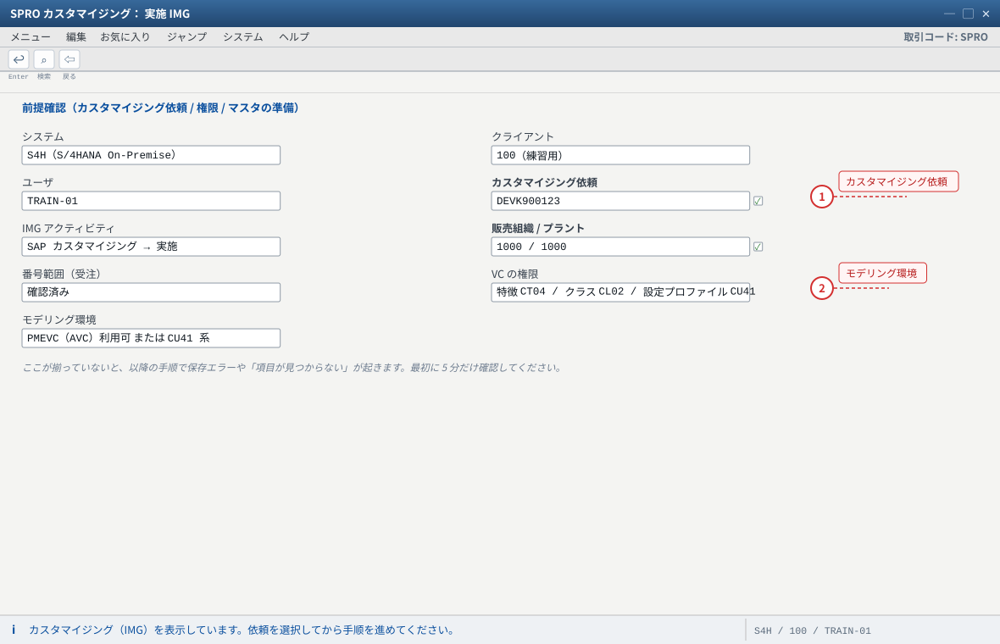
- 1 依頼を指定しないと保存できない
- 2 AVC(PMEVC) が使えるかは最初に確認（設計方針が変わる）
S/4HANA の AVC では PMEVC が統合モデリング環境です。従来の CU41 系を使うかはプロジェクトで決めてください。
前提与环境确认（権限・AVC/PMEVC の利用可否）
VA01・MMNR・CT04・CL02・CU41・PMEVC・CU50- 目的
- 避免「练习跑到一半才发现
KMATの番号範囲がない／CU50が使えない」という手戻り。VC は 5 つの専用 T-code が揃わないと练习①〜③ が成立しません。 - IMG パス（環境によって呼称が異なる）
- SPRO → クロスアプリケーションコンポーネント → 分類システム／バリアント構成。S/4HANA の AVC は
PMEVCが入り口（IMG からも起動可）。メニュー名は リリース・言語で変わるため、SPRO の検索窓に「バリアント」「分類」と入れて探すのが確実です。 - T-code
CT04（特徴）・CL02（クラス）・CU01〜CU03（依存関係）・CU41（設定プロファイル）・PMEVC（AVC モデリング環境）・CU50（シミュレーション）・MMNR（品目番号範囲）・VA01（販売区域の確認）- 入力値 / 確認対象
-
販売組織 1000 / 販売チャネル 10 / 部門 00 （販売エリア） プラント 1000 / 出荷プラント 1000 得意先 1000（受注先・出荷先を兼ねる） 品目タイプ KMAT の番号範囲に空き（内部採番 or 有効な外部番号） 区分 / クラス型 300 のクラスを新規登録できる権限 モデリング環境：CU41 系（LO-VC）で作る ／ PMEVC（AVC）で作る ← どちらかに決める
- 販売区域：
VA01の初期画面で1000/10/00が選べること（選べない＝組織構造の割当未了）。受注伝票に入った画面は閉じてよい。 - 得意先：
BPまたはXD03→ 得意先1000：販売エリアビューと出荷先（船積先）が存在すること。 - KMAT の番号範囲：
MMNR→KMATのグループに空きを確認。外部採番にする場合は採番ルール（ZVC-で始める等）を予め決める。 - VC 5 つの T-code を起動確認：
CT04→CL02→CU01→CU41→CU50を順に起動する。どこかで「権限がありません」が出たら、その時点で記録して講師に連絡（代替手順を相談）。 - AVC の可否：
PMEVCを起動してみる。起動できなければ LO-VC の画面（CU41系）で進める。この判断が以降の全手順の分岐点です。
CT04 で「特徴」の初期画面が開き、CU50 で品目を指定する画面（または品目が選べる構成画面）が出れば、前提は満たされています。
IVA01／CU50 がロックしている場合は、品目 ZVC-PUMP01 を作る前に C0 を終わらせてください（後で権限が判明すると手戻りが大きい）。CT04 は「変更モード」で開かないと新規登録できない（照会モードのまま入力して「変更できません」と言われるのが定番）→ 初期画面の「変更」を押すか、CT04 のメニュー「特徴 → 登録」。
② KMAT が品目タイプの F4 に出ない → 品目タイプの品目カテゴリ（OMS2 系）か、番号範囲未設定。
③ PMEVC が無い環境（ライセンス／スコープアイテム）→ 無理をせず LO-VC 手順へ。**判断を全員で共有**する（個人判断で混ぜると後で破綻）。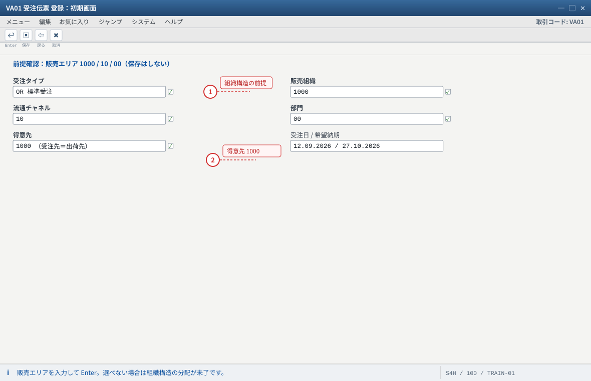
- 1 販売組織 1000 が F4 で選べる＝組織構造が分配済み。ここが空なら C0 の前提未了
- 2 得意先 1000 に販売エリアビューと出荷先があるか（XD03 / BP で確認）
自システムでの確認：VA01 の初期画面（組織構造）。保存はせず、選べることだけを確かめます。
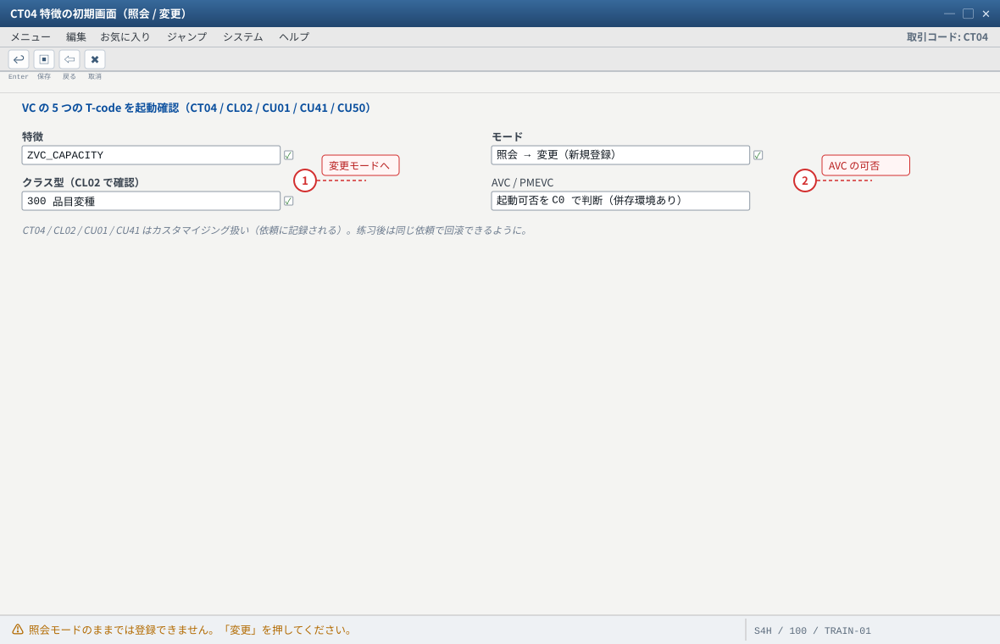
- 1 「変更」を押すと編集可。ここで権限とカスタマイジング依頼の有無が分かる
- 2 PMEVC が起動できなければ LO-VC（CU41 系）で進める＝以降の全手順の分岐点
自システムでの確認：CT04 → CL02 → CU01 → CU41 → CU50 を順に起動。使えない T-code があれば练习①〜③は実施不可（AVC は PMEVC も確認）。
特徴（Characteristics）の設計と登録
CT04- 目的
- 「選べる仕様」を 4 つ定義する。特徴は VC の入力インターフェースなので、値の粒度・必須・複数選択・追加データをここで設計しきる。
- IMG パス
- SPRO → クロスアプリケーションコンポーネント → 分類システム → クラス → 特徴（
CT04）。※実作業はCT04を直接起動するのが実務的（SPRO のメニューからも同じ画面が開く）。 - T-code
CT04（登録/変更/照会）。照会専用のCT03、値一覧のCT04→ 「許可値」タブ。- 入力値
-
特徴（技術名称） 名称（表示） 値の型 許可値 設計上のポイント ZVC_CAPACITY容量 (m3/h) NUM（数値）50/80/120数値型にすると大小比較の依存関係（ ><）が書けるZVC_MATERIAL材質 CHARFC200/SUS304/SUS316価格のキーに使う（加算差が最も出る特徴） ZVC_COATING塗装 CHARNONE/EPOXY/URETHANE工程の取捨（選択条件）に使う ZVC_ACCESSORY付属品 CHARNONE/PG/FG/PG_FG複数選択（複数値）を許可して練習する。※複数値を使うと単純な =判定では拾えないため、「組合せ値（PG_FG）」を用意する設計と併用
CT04→ 変更モード → 特徴ZVC_CAPACITYを入力 → 「登録」。- 基本データ：名称「容量 (m3/h)」、データタイプ
NUM、長さ・小数点（例 3.0）、単位（必要な場合）、値チェックは「許可値による」。 - 「許可値」タブ → 値
50/80/120を登録（値ごとに説明文を入れると設定画面で読みやすい）。 - 同様に
ZVC_MATERIAL/ZVC_COATINGをCHARで登録（値は上表）。 ZVC_ACCESSORY：基本データの「複数値（複数選択可）」を ON。値はNONE/PG/FG/PG_FG。- 必須の設計：必須にするかはクラス側（
CL02の特徴行）で決めるのが基本（同じ特徴を別クラスでは任意にしたいことがあるため）。ここではCT04では必須にしない。 - 追加データ（変種価格用・発展）：価格のキーに使う特徴は「追加データ」タブで テーブル／項目（
SDCOM/MMCOMのVKONDという記載）を指定する。→ 詳細は C13。 - 4 つ登録できたら
CT04→ 照会で 4 特徴の名称・データタイプ・許可値を一覧で確認。
CT04（照会）で ZVC_MATERIAL を開き、データタイプ CHAR・許可値 3 件・「複数値」の状態を確認。
② SE16N で CABN を特徴の技術名称（ATNAM という項目という記載が一般的）で絞り、1 件見つかれば登録は有効。値は CAWN／テキストは CAWNT という記載（必ず SE11 で項目名を確認してから使う）。NUM ⇔ CHAR）→ 変えたいなら別名で作り直す。最初に決める。
② 値の先頭に空白・全角文字が混入すると依存関係の = 判定が一致しない（最も多い作業ミス）。CU50 で選んだ後に「値が一致しない」症状が出たら、値の前後の空白を疑う。
③ 複数値（複数選択可）の特徴を、単純な前提条件 $SELF.ZVC_ACCESSORY = 'PG' で判定しようとして「選んだのに反応しない」→ 複数値では「すべての値が条件を満たすか」で判定されるため、組合せ値（PG_FG）を別途用意するか、手続きで単一値に正規化する設計にする。ZVC_CAPACITY を「数値」ではなく「文字」で作った場合、どんな依存関係が書けなくなるか？ ② なぜ必須フラグをクラス側で持つ設計が良いのか、理由を 2 つ挙げよ（ヒント：クラスの再利用、特徴の再利用）。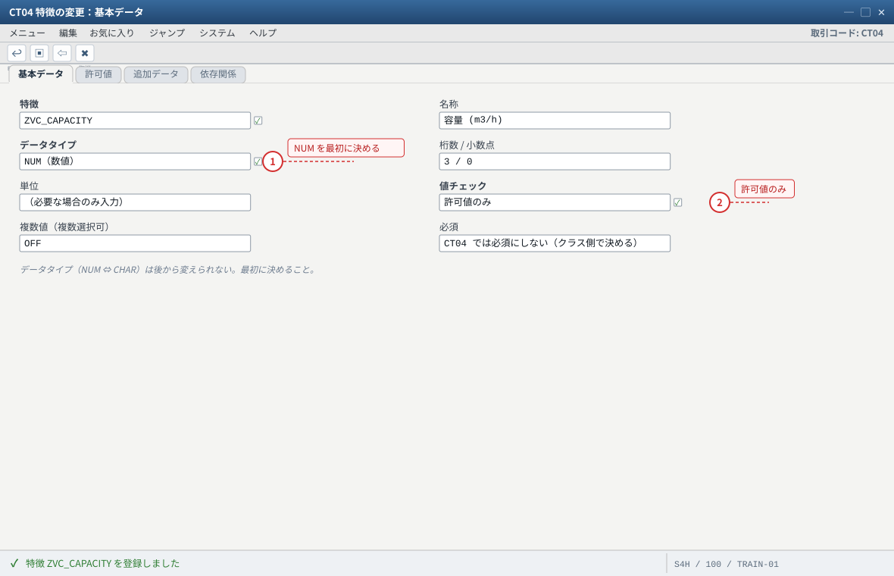
- 1 NUM にすると大小比較（>=）の依存関係が書ける。CHAR にすると容量の条件が書けない
- 2 値チェック＝許可値のみ。自由入力にすると条件レコードのキーが揃わない
自システムでの確認：CT04（照会）＋ SE16N CABN（特徴の技術名称。値は CAWN / テキストは CAWNT という記載 → 項目名は SE11 で確認）。
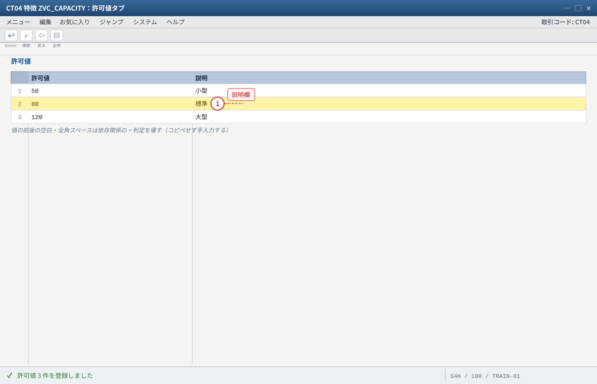
- 1 説明を入れておくと CU50 の設定画面で読みやすい
自システムでの確認：CT04 → 該当特徴 → 許可値タブ。SE16N は CAWN（値）/ CAWNT（テキスト）という記載（項目名は SE11 で確認）。
クラス（型 300）の登録と特徴の割当
CL02（CL01/CL03）- 目的
- 4 特徴を 1 つの「質問票」にまとめる。クラス型
300（品目変種）を使うことが VC の必須条件（他の型と混ざると品目の分類ビューにクラスが出ない）。 - IMG パス
- SPRO → クロスアプリケーションコンポーネント → 分類システム → クラス → クラス（
CL02）。クラス型の定義は IMG の「クラス型」で確認。 - T-code
CL02（登録/変更）・CL01（登録）・CL03（照会）- 入力値
-
クラス型 300（品目変種 / Variant class） クラス名 ZVC_PUMP_CL 名称 ポンプ バリアントクラス 特徴の割当 ZVC_CAPACITY（必須=ON） / ZVC_MATERIAL（必須=ON） ZVC_COATING（必須=ON） / ZVC_ACCESSORY（必須=OFF = 任意）
CL02→ クラス型300を選ぶ（F4 で型一覧が確認できる）。- クラス
ZVC_PUMP_CLを入力 → 登録 → 名称「ポンプ バリアントクラス」。 - 「特徴」タブ → 行を追加 → 特徴
ZVC_CAPACITYを入力。表示される特徴名・データタイプを確認。 - 同じ行の「必須（必須特徴）」列を ON（
ZVC_CAPACITY/ZVC_MATERIAL/ZVC_COATING）。ZVC_ACCESSORYは OFF（任意）にしておく（後で「必須にすると何が起きるか」を練習する余地を残す）。 - 4 行そろったら保存。保存時にカスタマイジング依頼を聞かれるので、練習用の依頼を指定。
CL03でクラスZVC_PUMP_CLを照会し、4 特徴と必須状態を確認。
CL03 → クラス ZVC_PUMP_CL：特徴タブに 4 行、必須列の状態が意図どおり。
② SE16N → KLAH（クラスマスタ）で CLASS = ZVC_PUMP_CL・クラス型の項目 KLART = 300（という記載が一般的）を確認。クラスに割り当てた特徴は KSML という記載。
③ 品目への割当は C3 で行う（クラス単体では受注に効かない）。001 品目一般など）→ 品目の分類ビューでクラスが見えない。症状が出たら CL03 のクラス型を最優先で確認。
② 特徴の「必須」を全部 ON にすると、CU50 で未入力のまま抜けられなくなる（それ自体は正しい動作）。「必須にして止める」のか「任意にして運用でカバーする」かは業務判断（第 3 節の設計判断②と同じ論点）。
③ 既に受注が流れているクラスに特徴を追加すると、既存受注の再構成が必要になることがある（変更統制の論点 → 练习⑤）。ZVC_PUMP_CL の ZVC_ACCESSORY を必須に変えて CU50 を実行すると、何が起きるか？実際に試して元に戻してください（元に戻せることが「変更統制を理解した」証拠）。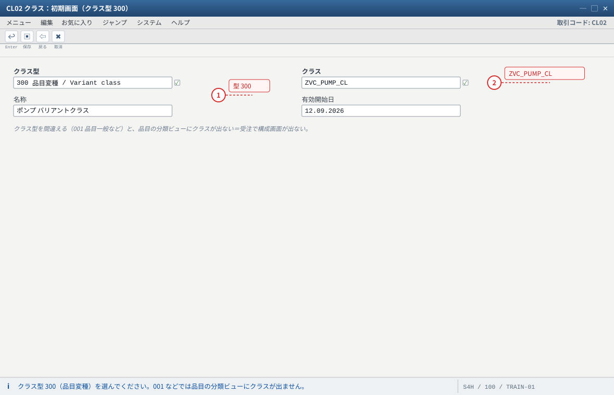
- 1 クラス型 300 は VC の必須条件。症状が出たら最初にここを見る
- 2 クラス名は全手順で ZVC_ 統一（品目への割当で見つけやすくする）
自システムでの確認：CL03（照会）と SE16N KLAH（CLASS / クラス型の項目 KLART = 300 という記載）→ 項目名は SE11 で確認。
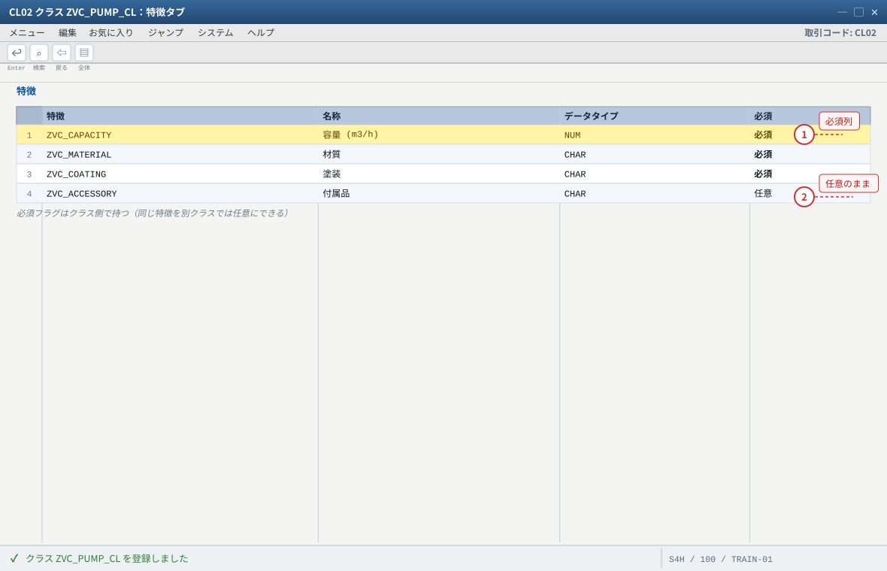
- 1 必須はクラス側で設計する。CT04 では必須にしない（特徴の再利用のため）
- 2 付属品は任意のまま → 「必須にすると何が起きるか」を後で練習する余地を残す
自システムでの確認：CL03 の特徴タブ／SE16N KSML（クラスに割り当てた特徴という記載・CLINT の内部番号で絞る）→ 項目名は SE11 で確認。
設定可能品目 ZVC-PUMP01（KMAT）の登録とクラス割当
MM01 / MM02 / MM03- 目的
- VC の親品目を作る。品目タイプ
KMAT・品目カテゴリグループ0002・設定可能インジケータ・MRP3 戦略25・MRP4 個別所要量の 5 点がそろって初めて「受注で設定できる」状態になる。 - IMG パス
- 品目マスタは IMG ではなく
MM01（必要に応じて SPRO → マスタデータ → 品目マスタの設定を参照）。品目カテゴリグループの定義はVOV7系ではなく販売伝票の明細カテゴリの決定（C10）で扱う。 - T-code
MM01（登録）・MM02（変更）・MM03（照会）・CL20N系（分類アプリ、任意）- 入力値（品目
ZVC-PUMP01/ 単位PC） -
视图 项目 值 为什么 基本データ1 品目タイプ / 品目グループ / 単位 KMAT/ 001 /PCVC の前提は品目タイプ KMAT（varconf：KMAT、または設定可能インジケータ付きのFERTという記載もあり）基本データ1 設定可能（Configurable）インジケータ ON これが OFF だと構成画面が出ない 販売組織1 販売組織 / チャネル / 部門 1000 / 10 / 00 受注可能な販売エリア 販売組織2 品目カテゴリグループ 0002VC の標準（SET 処理は 0004という記載）。VOV4の決定キーMRP1 MRPタイプ / ロットサイズ PD/EX所要量を計画手配に変換する MRP1 手配タイプ E（内製）内製＝製造指図。空だと計画手配ができません MRP2 指図タイプ（伝票タイプ） PP01製造指図タイプ（練習⑤の戦略 82ではPP04系）MRP3 戦略グループ 25VC の受注生産 → 所要量タイプ KEK→ 所要量クラス046系（varconf）MRP3 在庫確認（確認グループ） 02個別所要量ベースの在庫確認が前提（varconf：Availability Check 02）MRP4 個別/包括所要量 1（個別所要量のみ）受注在庫（特別在庫 E）を成立させる必須項目 会計1 / 原価計算1 評価クラス / 価格管理 / 原価計算ロットサイズ （例）7920 / S/EX受注在庫の評価と指図差異の基準 分類 クラス ZVC_PUMP_CLVC の必須条件。ここで C2 のクラスを割り当てる
MM01→ 品目ZVC-PUMP01→ 産業コード（例M）→ 品目タイプKMAT→ ビュー選択：基本データ1・2 / 購買（空でも可）/ MRP1〜4 / 会計1 / 原価計算1 / プラント在庫 / 販売組織1・2 / 分類 → プラント1000。- 基本データ1 で 設定可能インジケータを ON（ここで ON にすると内部オブジェクト番号が採番される）。
- 販売組織2 で品目カテゴリグループ
0002、MRP1〜4 を上表どおり入力。 - 分類ビュー → クラス型
300→ クラスZVC_PUMP_CLを入力。クラスの特徴が読み込まれ、値の割当画面（まだ空）になる。 - 保存 →
MM03で再確認：基本データ1（設定可能 ON）／販売組織2（0002）／MRP3（25・02）／MRP4（1）／分類（ZVC_PUMP_CL）。 - 「項目が見つからない」場合は、そのビューを選択していないか、項目が非表示（項目状態）。
OMS9系で項目状態を確認できるが、練習では触らず講師に相談。
MM03 で 5 点セット（KMAT/設定可能 ON/0002/戦略 25/MRP4 1）を目視確認。これが VC の 「受注できる 5 条件」です。
② クラス割当は MM03 の分類ビューでクラス名が見えるかで確認。テーブルで確認したい場合は KSSK という記載（キーの持ち方は画面で確認）。
③ 戦略グループ 25 の意味（所要量タイプ KEK／所要量クラス 046 系）は OPPS/OPPJ/OVZG で照会 → C11。0001（NORM）のまま → 明細カテゴリが VC 用に決まらず BOM 展開しない。
③ KMAT は原則として在庫管理されない（MMBE に自由在庫が出ない）。「在庫が見えない」は故障ではなく仕様。在庫の持ち方をどうするかは設計判断（受注在庫 E に構成品目を入れる／材料バリアントを使う等）。
④ MRP4 の個別所要量を入れずに受注すると、受注在庫（E）にならず「受注在庫に割当できません」系のエラーになる（练习⑤の故障表 #3）。KMAT／設定可能 ON／0002／戦略 25／MRP4 個別所要量）。
② ZVC-PUMP01 を MM03 で開き、どのビューにどの値が入っているかをワークシート シート A に転記せよ（自分の環境の証跡を残す）。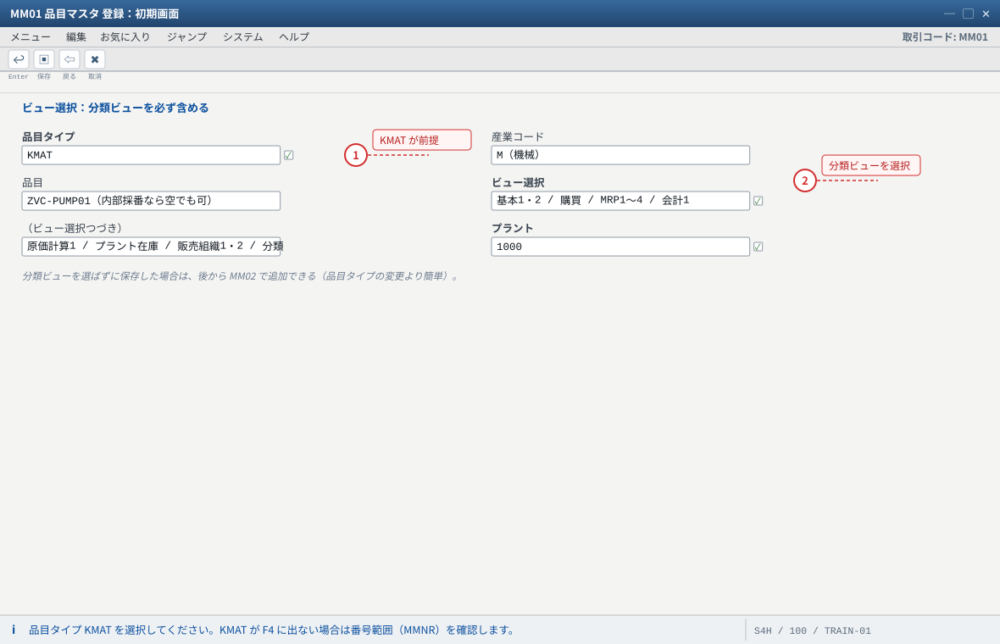
- 1 KMAT が F4 に出ない＝番号範囲（MMNR）か権限。VC の練習が始まらない前提
- 2 分類ビューを選ばないとクラスを割り当てられない（ここを忘れると受注で構成が出ない）
自システムでの確認：品目タイプ KMAT の番号範囲は MMNR、品目タイプの品目カテゴリは OMS2 系（练习では触らず講師に相談）。
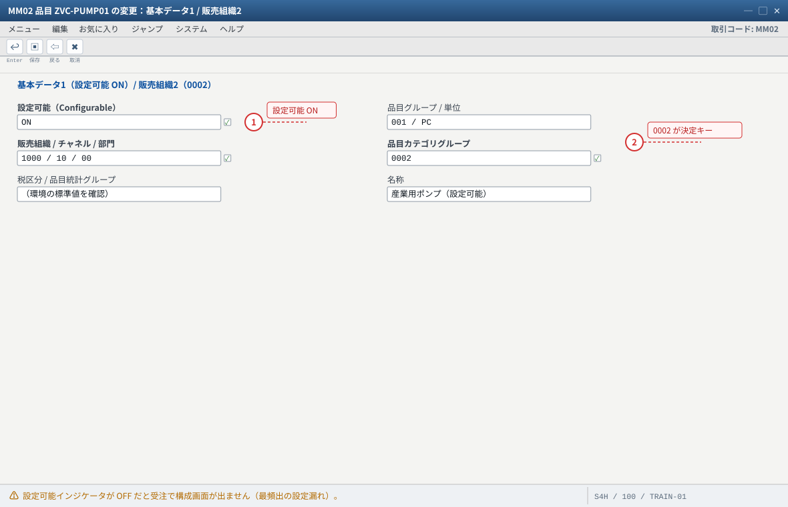
- 1 設定可能インジケータ。OFF なら構成画面が出ない＝「構成を入力できない」の第一嫌疑
- 2 品目カテゴリグループ 0002 が VOV4 の決定キー（0001 のままだと VC 用の明細カテゴリにならない）
自システムでの確認：MM03 の基本データ1（設定可能）と販売組織2（品目カテゴリグループ）。
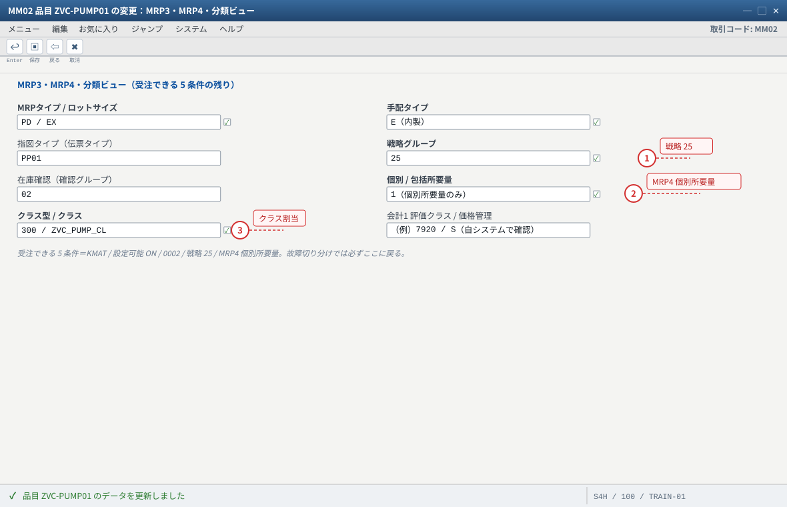
- 1 戦略 25 → 所要量タイプ KEK → 所要量クラス 046 系（C11 で照会）
- 2 MRP4 の個別所要量が受注在庫（E）を成立させる必須項目。未設定だと「受注在庫に割当できません」
- 3 分類ビューにクラス（型 300）が入って初めて受注で特徴が質問される
自システムでの確認：MM03 の MRP1〜4 と分類ビュー。テーブルで見る場合は KSSK という記載（キーの持ち方は画面で確認）。
設定プロファイルの作成と品目への割当（処理形式＝BOM の扱いを決める）
CU41 / CU42 / CU43 / PMEVC- 目的
- 「この品目をどう設定させるか」の入り口を作る。処理形式（BOM をどう扱うか）をここで決めるため、後の受注 BOM の見え方を左右する最重要の設計点。
- IMG パス
- SPRO → クロスアプリケーションコンポーネント → バリアント構成 → 設定プロファイル（
CU41）。S/4HANA（AVC）はPMEVCで作成し、特徴グループを割り当てる。 - T-code
CU41（登録）・CU42（変更）・CU43（照会）・PMEVC（AVC の統合モデリング環境）・CU50（動作確認）- 入力値
-
設定プロファイル名 ZVC_PROFILE01 名称 ポンプ受注 BOM プロファイル 割当先品目 ZVC-PUMP01 処理形式 ★「受注 BOM（Order BOM）」を選択（3 形式のうち） クラス 300 / ZVC_PUMP_CL チェック 必須チェック ON（未入力で終われないようにする） 画面（AVC の場合） 特徴グループを割り当て（PMEVC）
| 処理形式（3 択） | 受注明細での見え方 | 本站的取舍 |
|---|---|---|
| 明細 / 生産指図（BOM 展開なし） | 構成品目は受注に出ない（MRP・指図側で展開） | 最も軽い。営業が部品を確認できない |
| 伝票明細（SET 処理） | 構成品目が子明細として並ぶ（品目カテゴリグループ 0004 が前提） | 価格・所要量が子明細単位。本场景では採らない |
| 受注 BOM（Order BOM） | 受注ごとの BOM を作り、構成品目を確認・手修正できる | 採用（泵是按单改的商材）。練習③④ で使う |
CU41→ 設定プロファイル名ZVC_PROFILE01→ 登録。- 「割当（品目）」欄に
ZVC-PUMP01を入力（ここで品目にひもづく。品目マスタ側ではなくプロファイル側で指定する）。 - クラス
300/ZVC_PUMP_CLを入力し、特徴が読み込まれることを確認。 - 処理形式を 受注 BOM に設定（画面のラベルはリリースで異なる。「BOM」と付く項目を F4 で一覧して選ぶのが確実）。
- 必須チェック（完全性チェック）を ON。保存 →
CU43で照会。 - AVC の場合：
PMEVCで設定プロファイルを作成し、特徴グループを割り当てて品目に割当。CU50 相当の確認は Fiori の設定アプリまたはCU50で行う。 CU50で品目ZVC-PUMP01を指定し、設定画面（4 特徴）が開くことを確認（ここまでで「設定できる」状態になります）。
CU43 でプロファイル ZVC_PROFILE01 を照会し、割当品目・クラス・処理形式・必須チェックの状態を確認。
② CU50 → 品目 ZVC-PUMP01 で設定画面が開き、値を入力できる。値入力後に「結果（構成）」を確認できる。
③ 設定プロファイルのマスタは画面経由で保守するのが原則（SAP Help に「機能グループ CUCO＝設定プロファイルマスタの維持、CUCP＝使用箇所一覧」と記載）。CU50 では開くのに VA01 で構成画面が出ない（受注は品目マスタ経由でプロファイルを探すため）。
③ 必須チェック ON にした直後は「値が足りない」エラーが続く。これは正常（依存関係を入れる前は全部手入力する必要がある）。
④ CU41 と PMEVC を混ぜて同じ品目に 2 つのプロファイルを作る → どちらが効くか分からなくなる（どちらか一方に統一）。CU50 で「処理形式の違い」を体感する：受注 BOM 形式で構成し、「BOM 展開」を切って実行すると構成品目が出ないことを確認してください（発展：プロファイルを複製して BOM 展開なしのプロファイル ZVC_PROFILE_NOBOM を作り、VA01 の違いを見る）。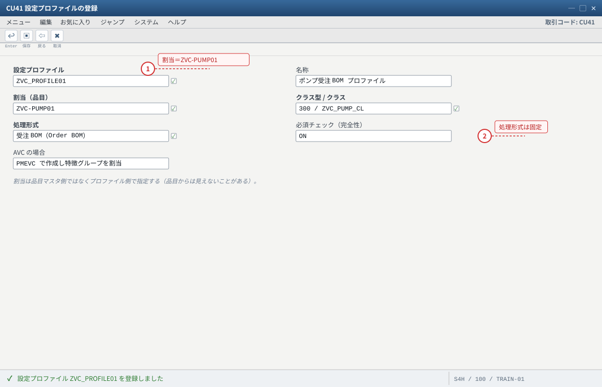
- 1 割当品目を忘れると CU50 では開くのに VA01 で構成画面が出ない（受注は品目経由でプロファイルを探す）
- 2 処理形式を後から変えると既存受注が壊れる。受注を流す前に固める
自システムでの確認：CU43（照会）。機能グループ CUCO ＝設定プロファイルマスタの維持、CUCP ＝使用箇所一覧という記載（SAP Help）。
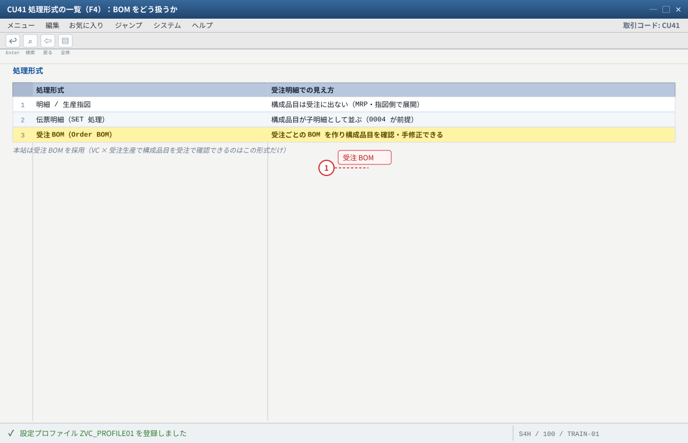
- 1 本站は 3 番目を選ぶ（練習③④ の前提）
自システムでの確認：CU41 の処理形式欄を F4 で一覧（ラベルはリリースで異なるため「BOM」を含む項目を探す）。CU43 で保存後の値を照会。
依存関係①：前提条件（Precondition）
CU01 / CU02 / CU03- 目的
- 「物理的に成立しない組合せ」を選べなくする。本站的第一条规则：塗装
EPOXYは材質SUS316を要求する（FC200では選べない）。 - IMG パス
- SPRO → クロスアプリケーションコンポーネント → バリアント構成 → 依存関係（
CU01）。実務は特徴/特徴値の画面（CT04）からCU01を作成して貼るのが普通。 - T-code
CU01（登録）・CU02（変更）・CU03（照会）・CT04（適用先＝特徴値）・CL02（適用先＝特徴）・CU50（動作確認）- 入力値
-
依存関係 ID ZVC_DEP_EPOXY_MAT （命名：ZVC_DEP_<用途>） 種類 前提条件（Precondition） 適用先 特徴値 ZVC_COATING の 'EPOXY'（CT04 の値の「依存関係」欄から割当） 式（構文） $SELF.ZVC_MATERIAL = 'SUS316' 意味 塗装=EPOXY は 材質=SUS316 のときだけ成立する ※ 成立しないときの挙動：その値が「不採用」になる（エラーで止めたい場合は設定プロファイル側の チェックと組合せで運用を決める）
CT04→ZVC_COATINGを変更モードで開く → 許可値EPOXYの行 → 「依存関係」欄（または割当ボタン）から新規作成。- 依存関係 ID
ZVC_DEP_EPOXY_MAT、種類を前提条件、説明「EPOXY は SUS316 のみ」を入力。 - エディタに式を入力：
$SELF.ZVC_MATERIAL = 'SUS316'（$SELFはこの依存関係が貼られている特徴値自身を指す。特徴を指定するときは技術名称を正確に）。 - 構文チェック（「チェック」ボタン。エラーが出たら半角/全角・引用符・セミコロンの有無を確認）→ 保存。
CU50→ 品目ZVC-PUMP01→ 材質FC200を選んだ状態で塗装EPOXYを選ぼうとすると選択できない／エラーになることを確認。CU03で依存関係ZVC_DEP_EPOXY_MATを照会し、適用先（どの特徴値に貼られているか）を確認 → 「使用箇所一覧」で適用先をたどるのが故障切り分けの基本。
CU03 → 依存関係 ID → 「適用先」／「使用箇所一覧」で、どの特徴値に貼られているかが見える（ここが見えないと発火しない）。
② CU50 で 2 通りの組合せ（SUS316+EPOXY / FC200+EPOXY）を試し、違いが出ることを目で確認する。
③ 構文の細かい文法はリリースで差が出るため、依存関係エディタの「シンタックスチェック」＋CU50 の実挙動を正とする。$SELF/$ROOT/$PARENT の取り違え：特徴値に貼る前提条件は $SELF、BOM 明細の選択条件は最上位を指す $ROOT（階層の親を指す $PARENT という説明もある。CS03 の選択条件画面の説明に従う）。
② 適用先が「特徴」なのか「特徴値」なのか。「値 EPOXY のときだけ」なら特徴値に貼る。特徴に貼ると塗装全体が使えなくなる（症状が全く違う）。
③ 前提条件を「エラー」と「不採用」どちらで運用するか決めずに作り、現場で「選べない理由が分からない」混乱が起きる。設定プロファイルのエラー表示／メッセージ設計まで含めて設計する。FG（流量計）は容量 120 以上でのみ選べる」。構文は $SELF.ZVC_CAPACITY >= 120 の形（数値特徴でないと使えない比較演算子です）。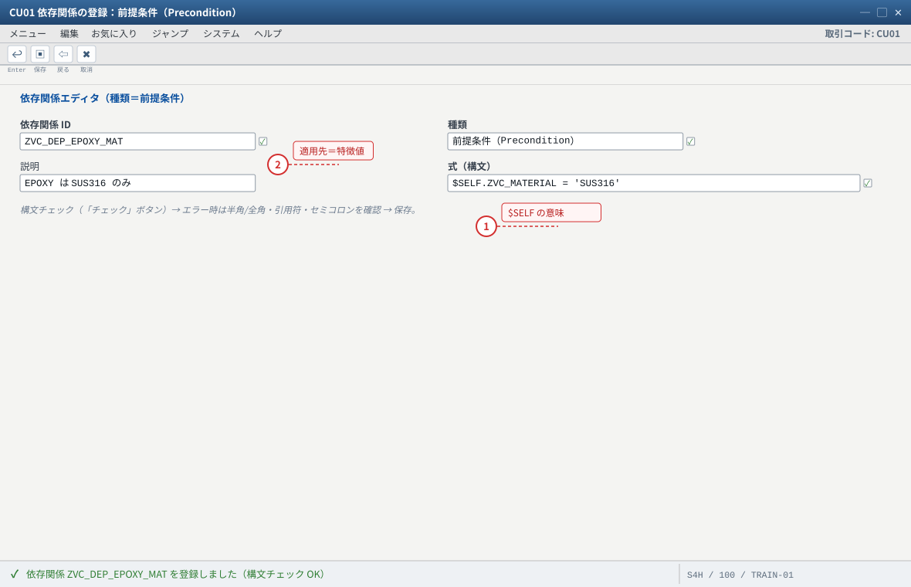
- 1 $SELF ＝この依存関係が貼られている特徴値自身。BOM 明細の選択条件は $ROOT を使う
- 2 適用先は「特徴値 EPOXY」。特徴 ZVC_COATING 全体に貼ると塗装そのものが使えなくなる
自システムでの確認：CU03（照会）で「適用先 / 使用箇所一覧」。文法は依存関係エディタの構文チェック＋ CU50 の実挙動を正とする。
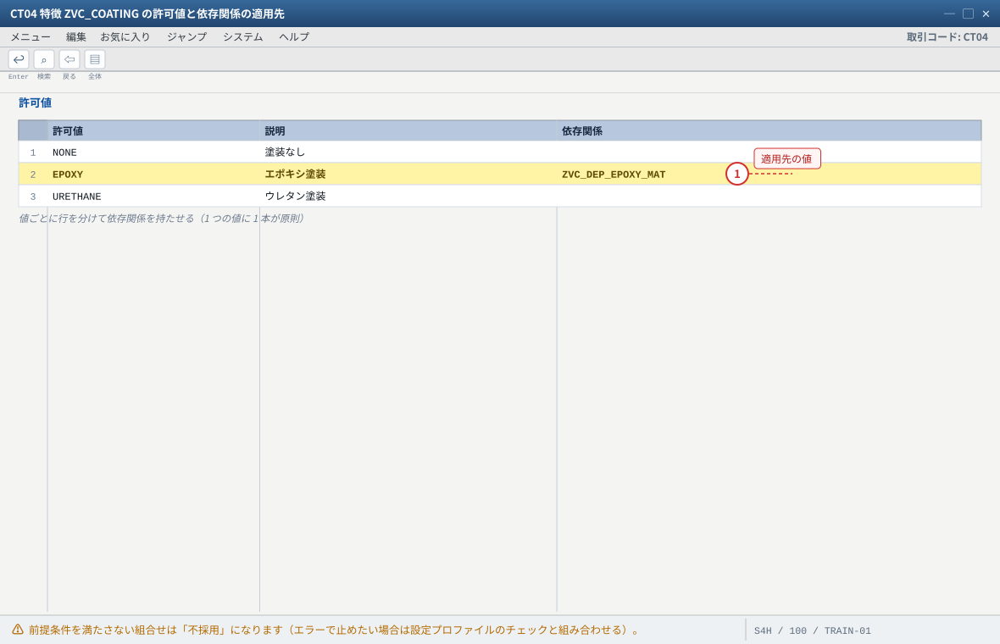
- 1 依存関係が入っている行＝発火する値。CU03 の使用箇所一覧と一致するか確認する
自システムでの確認：CU03 の「適用先 / 使用箇所一覧」で、どの特徴値に貼られているかを見る（ここが見えないと発火しない）。
依存関係②：選択条件（Selection condition）
CU01 / CS02 / CS03 / CA02 / CU50- 目的
- 設定値に応じてBOM の構成品目・作業手順の工程を採用/不採用にする。VC の「動きが見える」のはここ。本站：圧力計・流量計・塗装工程の取捨。
- IMG パス
- SPRO → バリアント構成 → 依存関係（
CU01で作成）。適用は BOM 明細（CS02の構成品目 → 「選択条件」）／工程（CA02）。 - T-code
CU01〜CU03・CS01/CS02/CS03（BOM）・CA01/CA02/CA03（作業手順）・CU50- 入力値
-
ZVC_DEP_PG 選択条件 使用箇所=圧力計の BOM 明細 $ROOT.ZVC_ACCESSORY = 'PG' OR $ROOT.ZVC_ACCESSORY = 'PG_FG' ZVC_DEP_FG 選択条件 使用箇所=流量計の BOM 明細 $ROOT.ZVC_ACCESSORY = 'FG' OR $ROOT.ZVC_ACCESSORY = 'PG_FG' ZVC_DEP_CASING_SUS / _FC 選択条件 使用箇所=ケーシングの BOM 明細（材質別の 3 行） $ROOT.ZVC_MATERIAL = 'SUS316' ／ $ROOT.ZVC_MATERIAL = 'FC200' ZVC_DEP_COAT_OP 選択条件 使用箇所=塗装工程（0030） $ROOT.ZVC_COATING <> 'NONE'
CU01→ 依存関係ZVC_DEP_PG→ 種類「選択条件」→ 式$ROOT.ZVC_ACCESSORY = 'PG' OR $ROOT.ZVC_ACCESSORY = 'PG_FG'→ チェック → 保存。CS02→ 品目ZVC-PUMP01→ 使用箇所1（スーパー BOM）→ 圧力計の明細行 → 「選択条件」欄にZVC_DEP_PGを割当（またはその場でCU01を起動して作成）。- 同様に流量計（
ZVC_DEP_FG）と材質別ケーシング 3 行（FC200/SUS304/SUS316）に選択条件を貼る。 CA02→ 作業手順ZVC_RT01→ 工程 0030（塗装）→ 選択条件ZVC_DEP_COAT_OP（$ROOT.ZVC_COATING <> 'NONE'）。CU50→ 品目ZVC-PUMP01→ 付属品NONEで構成 → BOM 展開して圧力計・流量計が出ないことを確認。次にPG_FGで構成 → 両方出ることを確認。- 塗装
NONEとEPOXYで工程一覧（CU50の工程／CA03）を比べ、0030 が消えることを確認。
CS03 → 品目 ZVC-PUMP01 → BOM 明細：各行の選択条件欄に依存関係 ID が入っているか。
② CA03 → 作業手順 ZVC_RT01：工程 0030 に選択条件があるか。
③ CU50 の構成結果で「BOM」タブ／「工程」タブを確認。BOM 展開の切替（しない/1 階層/多階層）を変えて違いを見る（SAP Help の BOM 展開レベルの記述と一致するはず）。CS02 の明細側で行う。
② BOM の有効日（有効開始日）が将来日付／過去日付で、受注日に展開されない（症状：特定の日付だけ部品が出ない）。
③ 代替 BOM と優先度の指定（使用箇所・代替）を間違え、想定と違う方が展開される。
④ 複数値特徴（PG_FG）と単一値の組合せ。値に PG_FG を用意せず PG と FG を同時選択した場合、= 'PG' の条件が成立しないことがある（→ 組合せ値を用意するか OR を丁寧に書く）。SUS316 のときだけ軸を ZVC-ROD-SUS に差し替える」選択条件を追加せよ（同じ構成品目に材質別の行を 2 つ用意して選択条件で取捨するのが設計パターン）。なぜ「BOM 側で条件分岐」ではなく「行を増やして選択条件」なのか、理由を説明せよ。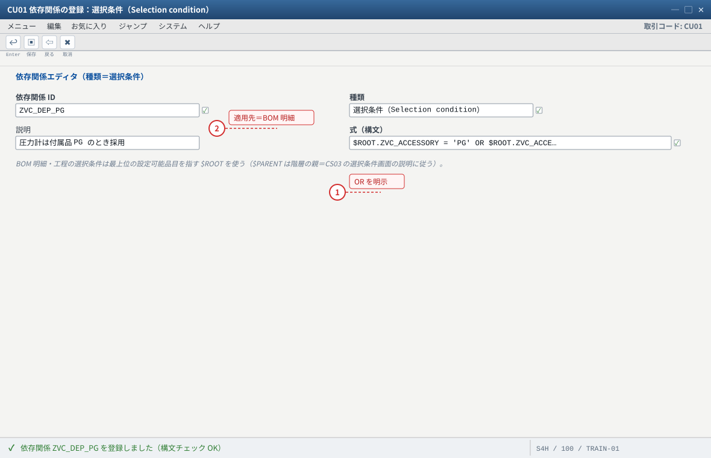
- 1 OR を書き忘れると PG_FG を選んだときに片方しか出ない（複数値特徴の定番症状）
- 2 適用先は BOM 明細（CS02 の 0070）。構成品目の品目マスタに書いても効かない
自システムでの確認：CU03 の使用箇所一覧に BOM 明細 0070 が出るか。CS03 の明細で選択条件欄を目視。
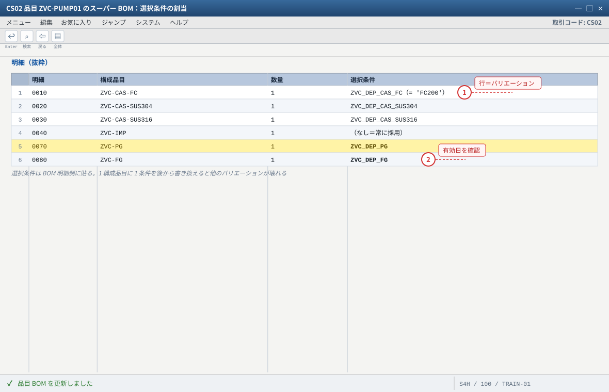
- 1 行ごとに別 ID を作る（同じ構成品目でも条件が違えば行を分ける）
- 2 有効日が将来日付だと受注日に展開されない（「部品が出ない」の定番原因）
自システムでの確認：CS03 の BOM 明細で選択条件欄を行ごとに目視。CS02 の明細 → 「選択条件」欄から CU01 を起動できる。
依存関係③：手続き（Procedure）とアクション（Action）
CU01 / CU02 / CS02 / CA02 / CU50- 目的
- 「選ぶだけでは決まらないもの」を計算・自動セットする。本站：容量
120のときモータ数量を 2 に、組立標準時間を 1.4 倍に。また「選んだら他の値を自動で正しくする」手続きも作る。 - IMG パス
- SPRO → バリアント構成 → 依存関係（
CU01）。適用は特徴値／BOM 明細／工程（標準値）。 - T-code
CU01〜CU03・CS02（構成品目の数量手続き）・CA02（工程の標準値手続き）・CU50- 入力値
-
ZVC_DEP_MTR_QTY 手続き / 適用先＝モータの BOM 明細 依頼：容量 120 なら数量 2、それ以外は 1 （数量項目の初期値は 1 とし、120 のときだけ書き換える方式が安全） ZVC_DEP_AUTO_PG 手続き / 適用先＝付属品の特徴値（または容量値側） $SELF.ZVC_ACCESSORY = 'PG' ← 容量 120 を選んだら付属品を PG に自動セット ZVC_DEP_TIME_120 手続き / 適用先＝工程 0010 の標準値 標準時間を 1.4 倍する（標準値項目の名称は自システムの CA03 で確認してから書く） ZVC_DEP_ACT_* アクション（発展。本站では説明のみ、実装は環境依存）
CU01→ 新しい依存関係ZVC_DEP_MTR_QTY→ 種類「手続き」。- 適用先として
CS02のモータ明細を指定（CS02の明細 → 「手続き」欄からCU01を呼び出す）。 - 式を書く：容量が 120 のときだけ数量を 2 にする。数量を直接書き換える式の書き方は環境差が出やすいので、まずは
① モータ明細の数量初期値を
1にし、② 容量120用に「代替品目/数量 2 の別行」を用意して選択条件で取捨する、という確実なパターンから始める（手続きでの上書きは環境依存の書き方が増えるため、練習では後半で試す）。 CA02→ 工程 0010 → 「標準値」欄に手続きを割当。項目名はCA03の画面で確認してから書く（標準値の項目名はリリース・作業区で異なる）。CU50→ 容量50と120で構成し、数量・標準値の差を確認。- アクション（発展）：
CU01の種類で「アクション」を選ぶと、設定結果を使った処理（伝票項目への転記・出力など）を定義できる。何ができるかはアドオン設計とリリースに依存するため、本站では実装せず「こういう用途がある」まで。
CU50 の構成結果で数量・標準値の差を目視（差が出ないときは適用先と式の項目名を疑う）。
② CU03 の「使用箇所一覧」で、手続きがどの BOM 明細／工程に貼られているかを確認。
③ 標準値項目の名称は CA03（作業手順照会）の標準値欄で確認。本站では項目名を断定していません（リリース差が大きいため）。120 のとき、組立標準時間が 1.4 倍になる」を、① 手続き方式と ② BOM 行を増やす方式の両方で考え、どちらが保守しやすいかをトレードオフ付きで説明せよ（正解はありません。設計判断としての一貫性が求められます）。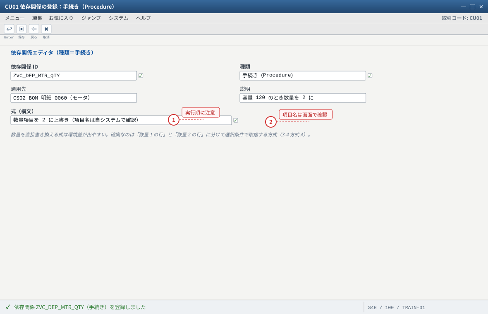
- 1 手続きは実行順に依存する。「A をセットしてから B」の式は評価順で結果が変わる
- 2 項目名を推測で書かない。CA03 / CS03 の画面で確認してから入力する
自システムでの確認：CU50 の構成結果で数量・標準値の差を目視。標準値の項目名は CA03 の標準値欄で確認してから書く。
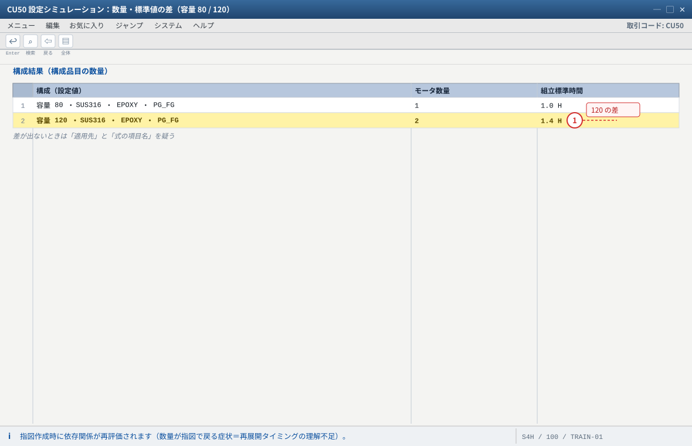
- 1 容量 120 だけ数量 2・標準時間 1.4 倍（手続きの実行結果）
自システムでの確認：CU50 で 2 通りを構成して数量・標準値を比較。CU03 の使用箇所一覧で手続きの適用先を確認。
スーパー BOM の登録と選択条件
CS01 / CS02 / CS03- 目的
- 全バリエーション分の構成品目を 1 つの BOM に入れる（＝スーパー BOM）。選択条件で今回の構成に必要なものだけが受注 BOM に残る。
- IMG パス
- BOM の設定は IMG の「品目 BOM」系。実作業は
CS01。BOM 用途（1＝生産）とプラントを確認。 - T-code
CS01（登録）・CS02（変更）・CS03（照会）・CS11/CS12/CS13（多階層）・CU50- 入力値
-
構成品目 品目コード 数量 選択条件（依存関係） ケーシング（FC200） ZVC-CAS-FC1 ZVC_DEP_CAS_FC（$ROOT.ZVC_MATERIAL = 'FC200'）ケーシング（SUS304） ZVC-CAS-SUS3041 ZVC_DEP_CAS_SUS（= 'SUS304'）ケーシング（SUS316） ZVC-CAS-SUS3161 ZVC_DEP_CAS_SUS（= 'SUS316'。行ごとに別 ID を作るのが安全）羽根車 / 軸 ZVC-IMP/ZVC-ROD1 / 1 （なし＝全構成で採用） モータ ZVC-MTR1（容量 120 は 2） （なし。数量は手続きか行追加で制御 → C7） 圧力計 ZVC-PG1 ZVC_DEP_PG流量計 ZVC-FG1 ZVC_DEP_FG
- 部品品目（
ZVC-CAS-*/ZVC-IMP/ZVC-ROD/ZVC-MTR/ZVC-PG/ZVC-FG）をMM01で作成（品目タイプはROH/HALB等、MRP1 はPD／ロットサイズEX。練習用に初期在庫は 561 で入れておくと以后の入出庫で詰まらない）。 CS01→ 品目ZVC-PUMP01→ プラント1000→ BOM 用途1（生産）→ 有効日（受注日より前、例 年初）を入力。- 上表の 7〜8 行を入力（ケーシングは材質別に 3 行。スーパー BOM なので「全部入れる」のが正しい）。
- 各行の「選択条件」欄に依存関係 ID を割当（C6 で作ったもの。無ければその場で作成）。
- 保存 →
CS03で明細と選択条件を確認。 CU50→ 材質SUS316で構成 → BOM 展開 → ケーシングがZVC-CAS-SUS316の 1 行だけになることを確認（他 2 行が消える）。
CS03：明細数と選択条件の有無。② CU50：構成ごとの展開結果（BOM 展開レベルを変えて比較）。
③ 数量は CS03 の明細数量と CU50 の展開結果が一致するか（手続きを入れた後は必ず見る）。ECN）の運用が厳しい環境では、BOM 変更が承認フローに入り当日に直せない（→ 変更統制の論点）。
③ 代替 BOM・使用箇所（1＝生産）を間違えると、指図に展開されない。
④ スーパー BOM を「受注 BOM にコピーした後に直す」運用を混同する：直すべきはスーパー BOM（受注 BOM はコピー。手修正は受注単位の例外）。ZVC-CAS）にして、手続きで品目を切り替える方式は可能か？可能だが推奨しない理由を、保守性・可読性・故障切り分けの 3 観点で説明せよ。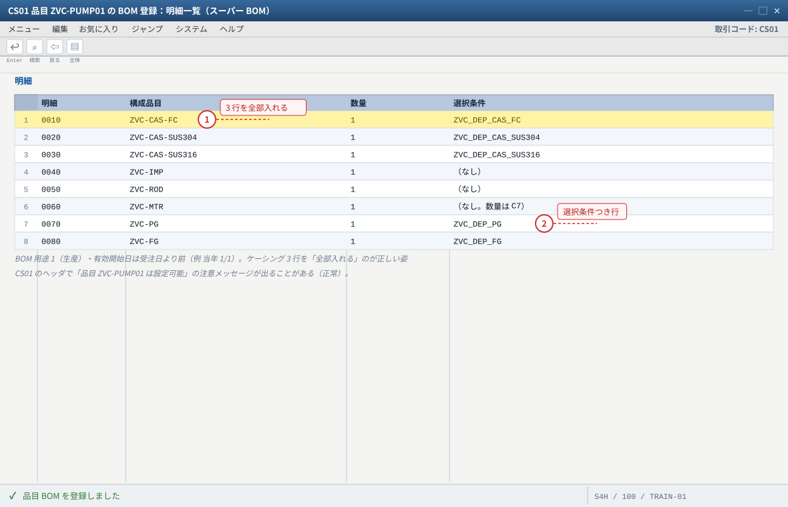
- 1 材質別ケーシングを 3 行。ここで削らず選択条件で取捨するのがスーパー BOM の設計
- 2 付属品行は C6 の選択条件で取捨される
自システムでの確認：CS03（照会）で明細数と選択条件の有無。CS11 / CS12 / CS13 は多階層照会。
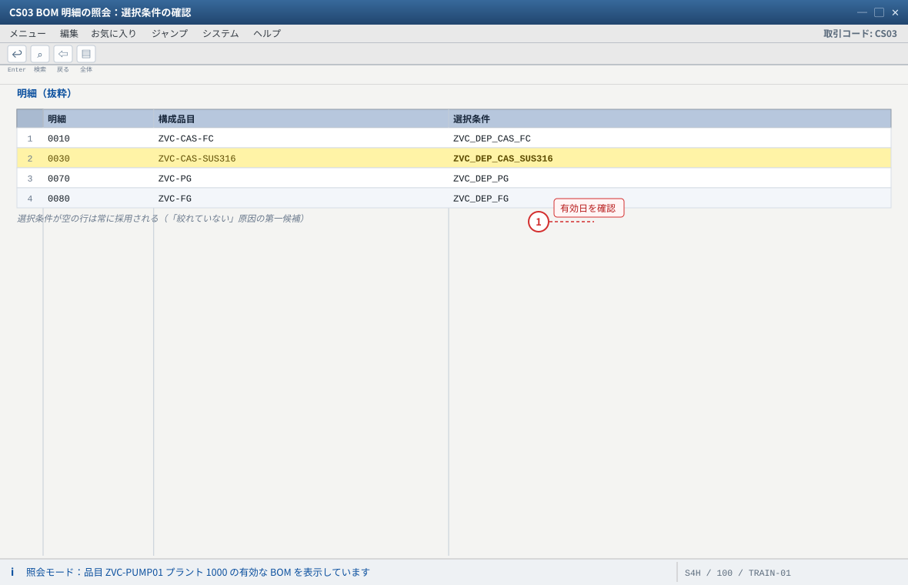
- 1 有効日が未来／過去だと CU50・VA01 で展開されない（特定の日付だけ部品が出ない症状）
自システムでの確認：CS03 の選択条件欄（行ごと）と有効日。CU50 の展開結果と一致するか。
作業手順（工程）と依存関係
CA01 / CA02 / CA03 / CU01- 目的
- 作業手順にも「全部の工程」を入れておき、選択条件で取捨する。塗装なしの構成では塗装工程が消える、という動きを作る。標準値の書き換え（手続き）もここで効く。
- IMG パス
- 作業手順は IMG の「製造」系（作業区・工程管理）。実作業は
CA01。作業区ZVC_WC01・作業手順グループの確認は IMG の工程管理側。 - T-code
CA01（登録）・CA02（変更）・CA03（照会）・CU01（選択条件・手続き）・CU50- 入力値
-
作業手順グループ / 作業手順 ZVC_RT01 プラント 1000 / 品目 ZVC-PUMP01 工程 0010 組立（作業区 ZVC_WC01）標準時間 1.0 H ← 全構成で採用 工程 0020 検査（作業区 ZVC_WC01）標準時間 0.5 H ← 全構成で採用 工程 0030 塗装（作業区 ZVC_WC01）標準時間 0.8 H ← 選択条件 ZVC_DEP_COAT_OP（塗装 NONE では非採用） 確認 CA03 の標準値欄で項目名を確認してから手続きを書く（項目名は環境依存）
CA01→ 品目ZVC-PUMP01/ プラント1000→ グループZVC_RT01→ 工程 0010/0020/0030 と作業区・標準時間を入力。- 工程 0030 の「選択条件」欄に
ZVC_DEP_COAT_OP（$ROOT.ZVC_COATING <> 'NONE'）を割当。 CA02で標準値の項目名を確認し、必要なら C7 の手続き（標準時間 1.4 倍）を割当。CU50→ 塗装NONEで構成 → 工程 0030 が出ない、EPOXYで構成 → 出ることを確認。- 製造指図を作成する练习（④）で、指図の工程一覧にも同じ取捨が効くことを確認（
CO03）。
CA03 で工程と選択条件を照会。② CU50 の「工程」結果で取捨を確認。
③ 指図側は CO03 → 工程ボタン → 「工程の選択」結果。受注 BOM と同様、指図作成時に選択条件が再評価されることを確認する。CO03 で工程が出ない症状）。
② 工程を消す条件を「工程の削除フラグ」でやろうとする → 選択条件を使うのが VC の正解。
③ 標準値の手続きを入れた後、指図の再展開で標準値が元に戻る（再評価タイミングの理解不足）。120 のときだけ検査工程を 2 回（0020 を 2 行）にする」設計を、① 選択条件方式 ② 手続き（標準時間）方式 の 2 案で比較せよ。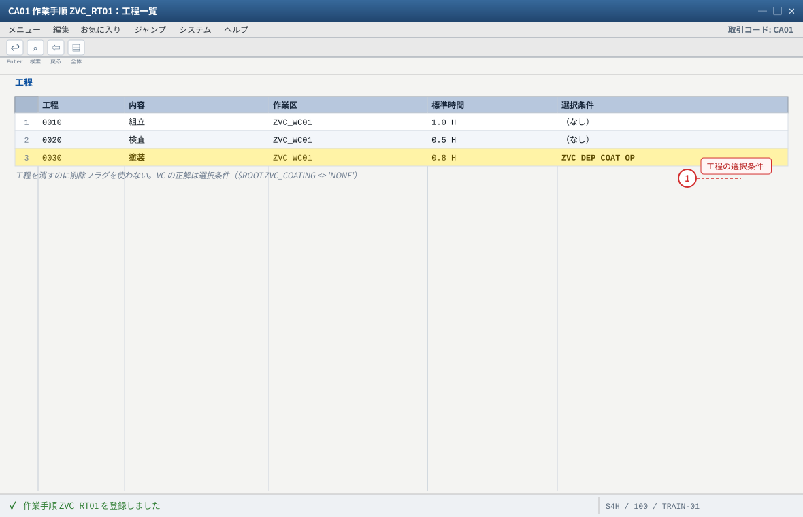
- 1 塗装工程の選択条件。これが無いと塗装 NONE でも工程 0030 が出る
自システムでの確認：CA03（照会）で工程と選択条件。CU50 の「工程」ビューで取捨を確認。
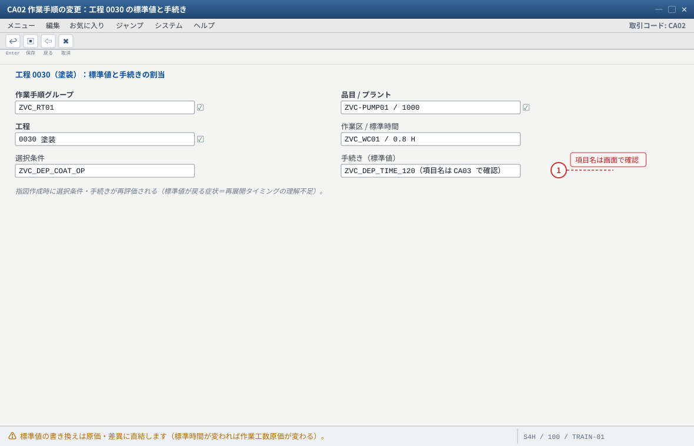
- 1 項目名を推測で書かない：CA03 の標準値欄で確認してから手続きを割り当てる
自システムでの確認：CA03 の標準値欄で項目名を確認。指図側は CO03 → 工程で再評価されることを確認。
明細カテゴリの確認（VC 品目がどう決定されるか）
VOV7 / VOV4 / VA03- 目的
- 「設定可能品目を入れたら、どの明細カテゴリが決まるか」を確認する。VC 用の明細カテゴリが決まらないと構成画面が出ない／BOM が展開されない。
- IMG パス
- SPRO → 販売と流通 → 販売伝票 → 販売伝票明細 → 明細カテゴリの定義（
VOV7）／明細カテゴリの割当（VOV4）。 - T-code
VOV7（定義）・VOV4（割当）・VOV5/VOV6（納入日程行カテゴリ）・VA03（実機確認）- 入力値 / 確認対象
-
決定要素（VOV4 のキー） 販売伝票タイプ ／ 品目カテゴリグループ ／ 用途 ／ 上位明細カテゴリ 本站の受注 OR（標準受注）＋ 品目カテゴリグループ 0002 ＋ 用途（空）＋ 上位（空） 結果 環境により異なる（「通常は TAN 系」という記載があるが、TAC 等の VC 専用カテゴリを 使う設計もある → VOV4 と受注明細で必ず実測する） TAN 以外だった場合 その明細カテゴリの属性（構成入力／BOM 展開／価格設定／納入日程行許可）を VOV7 で確認
VOV4→ 販売伝票タイプORを選び、品目カテゴリグループ0002の行を探す（F4 で一覧）。決定の優先順（より特定的な行が勝つ）を確認。- 決まった明細カテゴリ（例
TAN）をVOV7で開き、属性を確認：構成入力（設定の可否）／BOM 展開／価格設定／納入日程行カテゴリの許可。 VOV5/VOV6で納入日程行カテゴリ（所要量転送の有無）を確認。所要量が転送されないと MD04 に何も出ません。VA01で実際に受注を 1 件作り（保存しないでよい）、明細カテゴリが何になったかをVA03で確認 → これが唯一の確実な答え。- 必要なら 専用の明細カテゴリを自前で作る（
VOV7でTANをコピー →ZVC1など。用途は発展課題）。明細カテゴリの新規作成は影響が大きいので、必ず練習依頼に入れて後で回滚する。
VA03 の明細：明細カテゴリと、その明細が「構成入力可」かどうか（構成ボタンの有無）。
② VOV7 の該当カテゴリの属性（構成・BOM 展開・価格設定）。
③ 「通常は TAN」という記載（varconf）と、TAC＝Configurable material item という記載（thesdvault）が両方存在するため、本站では標準値を断定しません。VOV4＋VA03 の実測を正とする。TAK が標準に存在しない、という SAP Note 2708455 の話と同種の落とし穴）。
② 品目カテゴリグループを 0001 のままにして「構成画面が出ない」。
③ 納入日程行カテゴリで所要量転送が OFF のため MD04 に需要が出ない（故障表 #2 の第一嫌疑になる）。
④ 明細カテゴリを後から変えると既存受注の構造が変わる（価格・所要量・在庫区分に波及）。VOV4 が決める明細カテゴリを実測し、その属性（構成入力／BOM 展開／所要量転送）をワークシートに記録せよ。講義資料の記載と違ったら、差異と推測理由も書く。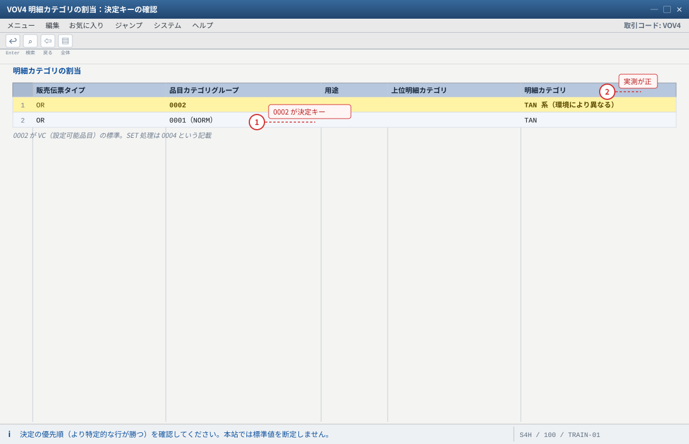
- 1 VC 品目のキーは 0002。0001 のままにすると VC 用の明細カテゴリが決まらず BOM が展開しない
- 2 決まった明細カテゴリは環境差が大きい（TAN 系という記載／TAC 等の専用カテゴリ設計もある）
自システムでの確認：VA01 で受注を 1 件作り（保存しなくてよい）、VA03 の明細で実際の明細カテゴリを見る＝唯一の確実な答え。
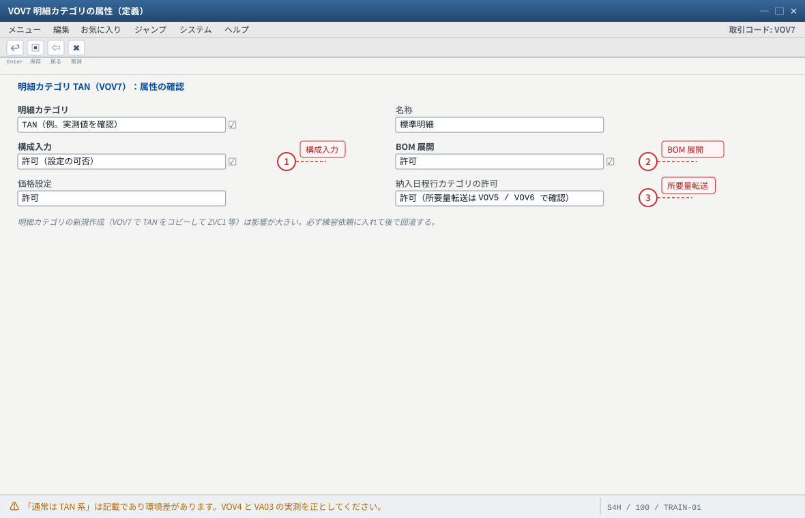
- 1 構成入力が許可でないと構成ボタンが出ない
- 2 BOM 展開が許可でないと受注で構成品目が出ない（処理形式と合わせて確認）
- 3 所要量転送が OFF だと MD04 に需要が出ない（故障表 #9 の第一嫌疑）
自システムでの確認：VOV7 の該当カテゴリの属性、VOV5 / VOV6 で納入日程行カテゴリ（所要量転送の有無）。所要量転送が OFF だと MD04 に需要が出ない。
戦略グループと所要量クラス（VC × 生産形態の接点）
OPPS / OPPJ / OVZG- 目的
- VC を「どの生産形態に乗せるか」を確認する。本站：戦略
25→ 所要量タイプKEK→ 所要量クラス046系（受注在庫 E）。練習⑤では82/KMFA/201/PP04へ切り替える。 - IMG パス
- SPRO → 生産 → 生産計画 → 計画手配/計画方針（
OPPS＝戦略グループ、OPPJ＝計画方針）／SPRO → 生産 → MRP → 所要量転送（OVZG）。 - T-code
OPPS・OPPJ・OVZG・MD04・CO03- 入力値 / 確認対象
-
戦略グループ 25 名称：Make-to-Order Production w/ Configuration → 所要量タイプ KEK → 所要量クラス 046 系（受注在庫・評価の扱いは要確認） 戦略グループ 82 名称：組立処理（Assemble-to-Order） → 所要量タイプ KMFA → 所要量クラス 201 → 指図タイプ PP04（受注と指図 1:1・BOM 必須） 確認：OPPS で 25 / 82 のエントリと紐づく所要量タイプ、OVZG で 046 / 201 の属性 （在庫区分・評価区分・指図/計画手配の種別）を照会する
OPPS→ 戦略グループ25を照会し、紐づく所要量タイプ（KEK）と計画方針を確認。OPPJ→ 計画方針（方可）の属性（指図タイプ・所要量クラス）を確認。OVZG→ 所要量クラス046の属性を確認：在庫区分（受注在庫）・評価の有無・指図タイプ・計画手配タイプ。この 1 画面が VC 受注生産の挙動を決めます。- 品目
ZVC-PUMP01の MRP3 戦略グループが25であることをMM03で再確認（C3）。 - 受注 → MRP 実行（
MD01N/MD02）→MD04で計画手配の在庫区分が受注在庫（E）になっているか確認（→ 练习④）。
OVZG で 046 の属性（評価区分・在庫区分）を目視。② MD04 の計画手配の「在庫区分」列。③ MMBE で受注在庫（特別在庫 E）の行が出るか。
評価（金額）まで見る場合は、品目の会計ビューと所要量クラスの評価区分を合わせて確認します。20/25/82 は一般的だが、業界ソリューションや既有改造で名称・紐づけが違う）→ OPPS の実測を正とする。
② 所要量クラス 046 が無い環境（古いリリース・Cloud のスコープ依存）→ 類似のクラス（040 系）を使う。「受注在庫(E)／個別所要量／指図タイプ」の 3 属性が合っているかで判断する。
③ 戦略 82 に切り替えたのに指図が自動作成されない → BOM 未整備・指図タイプ PP04 の設定不足（练习⑤）。OVZG で 046 と 201 の属性を並べて比較し、違いが業務にどう現れるか（受注と指図の関係・在庫の持ち方・所要量の出方）を 3 点で説明せよ。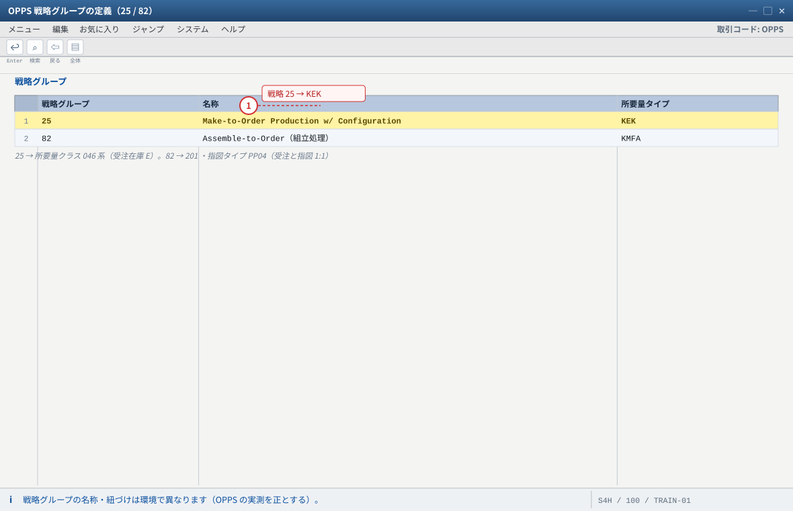
- 1 VC × 受注生産の入口。ここが 25 でないと受注在庫（E）にならない
自システムでの確認：OPPS の 25 / 82 のエントリと紐づく所要量タイプ、OPPJ で計画方針の属性（指図タイプ・所要量クラス）。
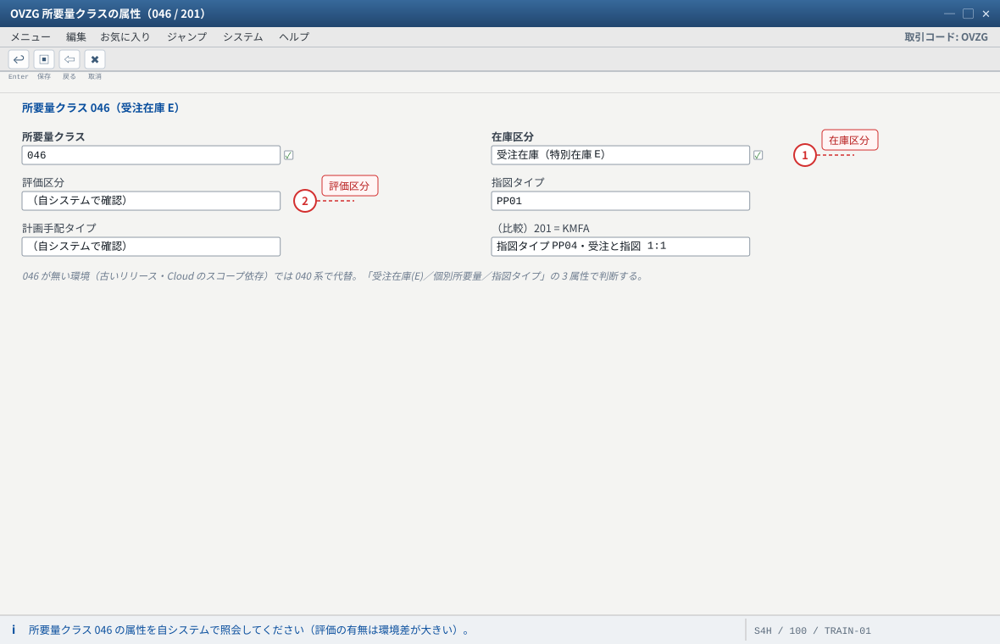
- 1 在庫区分が受注在庫でないと、受注在庫（E）にならない（故障表 #3）
- 2 評価区分の有無が入出庫の仕訳と差異に効く（C15 と合わせて確認）
自システムでの確認：OVZG で 046 の属性（在庫区分・評価区分・指図タイプ）と 201（指図タイプ PP04）。評価まで見る場合は品目の会計ビューと合わせる。
ATP・在庫確認（納期が決まる仕組み）
MM02（MRP3）・OVZ2 系・CO09・CU50- 目的
- 「設定した内容で、いつ納品できるか」を出す仕組みを確認する。VC の ATP は「構成品目の可用性」にも依存するため、在庫確認の範囲（Scope of Check）と構成品目への展開を理解する。
- IMG パス
- SPRO → 販売と流通 → 基本機能 → 在庫確認（
OVZ2系・確認グループと確認規則）／SPRO → 生産 → MRP → 計画手配（構成品目の在庫確認）。 - T-code
MM02（MRP3 在庫確認02）・OVZ2系（確認グループ）・CO09（可用量）・CU50・VA01（納期決定の実挙動）- 入力値 / 確認対象
-
品目 ZVC-PUMP01 の MRP3 在庫確認（確認グループ） = 02（個別所要量ベース）という記載（varconf） 受注時の挙動：納入日程行の希望納期 → 品目の在庫確認 → 構成品目の可用性（設定プロファイル/BOM 展開の範囲） 確認の観点：① 何を見て納期を決めたか（CO09 の ATP 要素） ② 構成品目の在庫が納期に効くか ③ 在庫確認が OFF の納入日程行カテゴリだと納期が「希望のまま」になること
MM03→ MRP3 の在庫確認（確認グループ）が何になっているか確認（本站は02を仮定）。OVZ2系で確認グループと確認規則（在庫・入庫・指図・購買のどれを見るか）を照会。CO09→ 品目ZVC-PUMP01：可用量と ATP 要素（受注がどう引当てられているか）を確認。VA01で受注を入力し、納入日程行の納期が希望どおりか／引当てされたかを確認（在庫ゼロなら希望納期のままで受注が通る＝MTO の正常動作）。- 構成品目の在庫（
MMBE）とCO09を見比べ、どこまで ATP が見ているかを記録（環境差が最も出る領域）。
CO09 の画面で「確認の範囲（Scope of Check）」を確認。② 受注明細の納入日程行で引当タイプ・確認数量を確認。
③ 構成品目に在庫がある状態（561 で投入）で受注を 2 回作り、納期が変わるかを見る（変わらない＝親品目だけを見ている＝設計意図の確認）。02 が環境に無い／別の値（例 01）→ MM03 と OVZ2 の実測を正とする。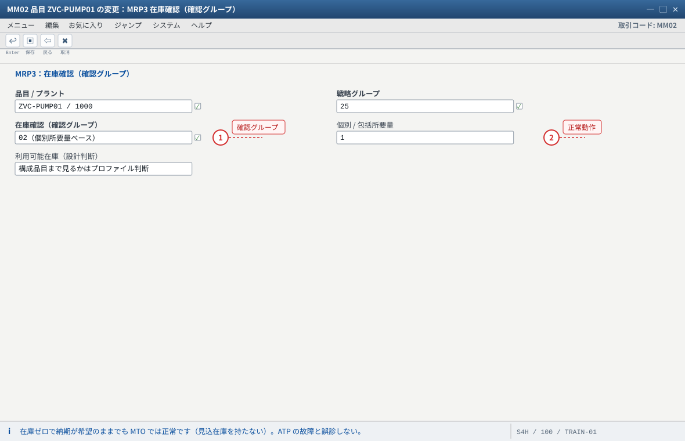
- 1 確認グループ＝ATP が何を見るか。環境に 02 が無ければ MM03 と OVZ2 の実測を正とする
- 2 在庫ゼロでも受注が通るのは MTO の正常動作（見込在庫を持たない）
自システムでの確認：MM03 の MRP3 で確認グループを確認（本站は 02 を仮定）。OVZ2 系で確認グループと確認規則（在庫・入庫・指図・購買のどれを見るか）を照会。
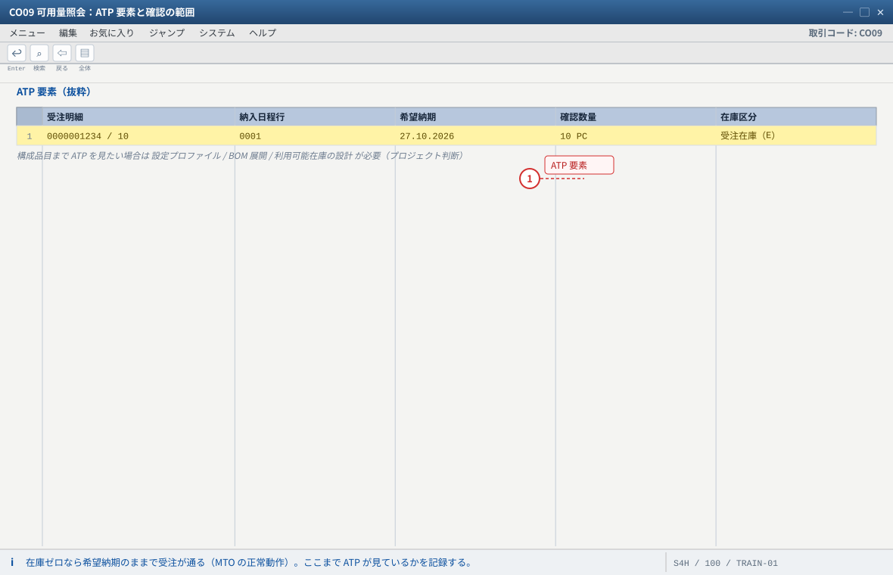
- 1 確認の範囲（Scope of Check）と確認数量。ここで納期の決まり方が見える
自システムでの確認：CO09 の「確認の範囲（Scope of Check）」と受注明細の納入日程行の引当タイプ・確認数量。構成品目の在庫（MMBE）と見比べる。
変種価格（VA00 と特徴の追加データ）
CT04 / V/06 / V/08 / VK11 / VK13- 目的
- 「選んだオプションで価格が上がる」仕組みを作る。条件タイプ
VA00（変種条件）＋計算手続＋条件レコード＋特徴の追加データの 4 点セット。 - IMG パス
- SPRO → 販売と流通 → 基本機能 → 価格決定 → 条件タイプの定義（
V/06）／計算手続の定義（V/08）。条件レコードはVK11。 - T-code
CT04（追加データ）・V/06・V/08・VK11/VK12/VK13・VA03（条件画面）- 入力値
-
条件タイプ VA00（変種条件。名称は「Variant condition」系） 特徴の追加データ ZVC_MATERIAL（または専用の価格用特徴）に テーブル SDCOM / 項目 VKOND を指定（LO-VC の記載。AVC は MMCOM-VKOND という記載） → CT04 の「追加データ」タブで設定。SE11 で構造の実在を確認する 計算手続 標準の受注用手続に VA00 のステップが存在するか、順序（小計との前後）を確認 条件レコード VK11 → VA00 → キー（VKOND の値 = 特徴値）ごとに金額 例）SUS316 = 120,000 / EPOXY = 35,000 / FG = 48,000（例。自システムの金額が正） 基本価格 PR00 = 850,000（条件レコード）
CT04→ 価格のキーに使う特徴（本站はZVC_MATERIAL、練習では専用特徴ZVC_PRICEKEYを作るのも可）を開き、「追加データ」タブでテーブル／項目を指定。SE11で その構造（SDCOM/MMCOM）と項目（VKOND）が存在するか確認。存在しなければ自分の環境の正しい構造を探して指定する（本站では存在を断定していません）。V/06→VA00の属性（計算タイプ＝加算／小計など）と有効な販売組織を確認。V/08→ 受注の計算手続にVA00のステップがあるか、順序と「小計（X系）」との関係を確認。VK11→VA00→ キー（特徴値）ごとに条件レコードを作成（SUS316/SUS304/FC200/EPOXY/URETHANE/PG/FG）。VA01で受注を入力 →VA03の条件画面でVA00の行が出て、設定値に応じた金額になっていることを確認。
VK13：条件レコードの一覧（キーの値と金額）。② VA03 条件画面：VA00 の行、決定された条件レコードのキー。
③ CT04 追加データ：テーブル／項目名。
④ SAP KBA 1934081 の説明どおり、標準では「VKOND を参照する特徴の値」が変種条件行を決める——受注画面で値がキーとして飛んでいるかを確認します。VA00 が無い／順序が小計より前後で表示桁が変わる（設計の合意対象）。
③ 条件レコードのキーの値が特徴値と完全一致していない（大文字小文字・空白・全角）。
④ AVC 環境で SDCOM を指定して動かない → MMCOM-VKOND という記載を疑う（CT04 の追加データと SE11 で確認）。SUS316 ＋ 容量 120 の組合せにだけ追加加算を付ける方法を考える（ヒント：専用の価格用特徴と手続きでキーを作る）。
② 加算を「金額」ではなく「率（％）」で持つ場合の設計を考え、金額方式とのトレードオフを書け。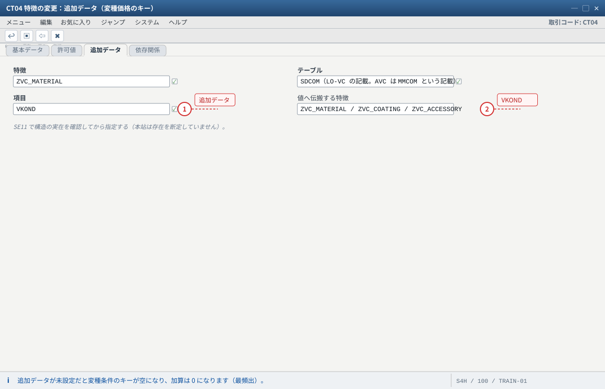
- 1 価格のキーに使う特徴にだけ追加データを定義する
- 2 項目 VKOND に特徴値が飛ぶと、条件タイプ VA00 の条件レコードが引ける
自システムでの確認：SE11 で構造（SDCOM / MMCOM）と項目（VKOND）が存在するか確認。AVC は MMCOM-VKOND という記載。
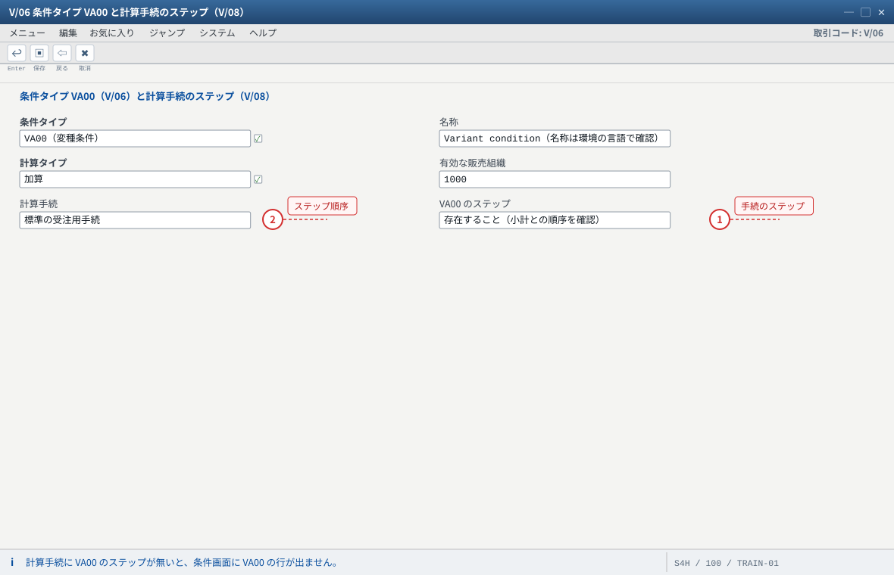
- 1 ステップが無い／有効期間外だと条件画面に VA00 が出ない（加算が出ない第一嫌疑）
- 2 小計（X 系）との前後で表示桁が変わる＝設計の合意対象
自システムでの確認：V/06 で VA00 の属性（計算タイプ＝加算／小計など）と有効な販売組織、V/08 で受注の計算手続に VA00 のステップがあるか。
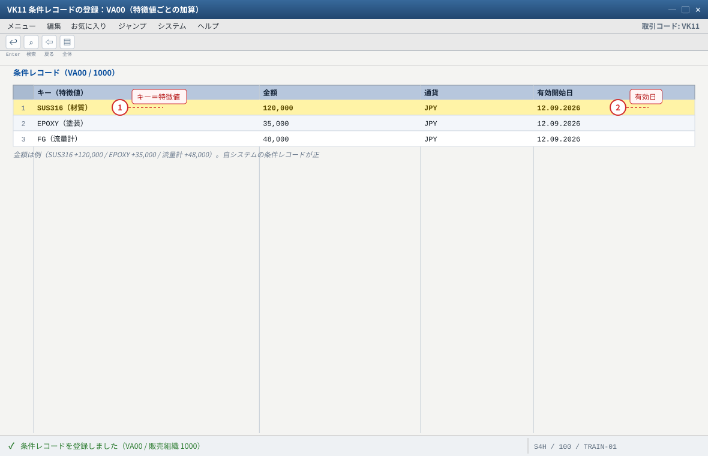
- 1 キーの値は特徴値と完全一致させる（大文字小文字・空白・全角に注意）
- 2 有効期間外だと VA01 の条件画面に VA00 の加算が出ない
自システムでの確認：VK13 の条件レコード一覧（キーの値と金額）。VA03 の条件画面で決定された条件レコードのキーを見る。金額は例（自システムの金額が正）。
出荷・請求の前提（VC での見え方）
VL01N / VL02N / VF01 / VTFL- 目的
- 構成された製品を出荷・請求まで通す前提を確認する。操作は MTO/ETO と同じだが、受注在庫（E）からの出庫と変種価格の加算の 2 点が VC の見どころ。
- IMG パス
- SPRO → 販売と流通 → 出荷 → 出荷伝票（出荷タイプ
LF）／販売 → 請求 → 請求伝票（請求タイプF2・VTFLのコピー制御）。 - T-code
VL01N・VL02N（出庫確認 601）・VF01・VF03・VTFL・VA03（伝票フロー）- 入力値 / 確認対象
-
出荷タイプ LF（標準）／ 出荷の在庫区分 = 受注在庫 E（= 受注明細に帰属） 出庫確認（PGI）の移動タイプ 601（受注在庫からの出庫） 請求タイプ F2 ／ コピー制御（出荷 → 請求）が有効であること 請求書には VA00 の加算行が乗る（条件は出荷から請求へコピーされる）
- 完成品が受注在庫（E）に入庫されていることを
MMBEで確認（→ 练习④）。 VL01N→ 出荷作成 → 明細で 在庫区分 E と受注番号、引当数量を確認。VL02N→ 出庫確認（PGI）→ 移動タイプ 601 で受注在庫が減少し、会計伝票が生成されることを確認。VF01→ 請求 → 明細の条件にPR00＋VA00の加算が乗っているか確認。VA03→ 伝票フローで 受注 → 出荷 → 請求 → 会計伝票 が閉じているか確認。
VL01N 明細の在庫区分。② PGI 後の MMBE（受注在庫が 0）。③ VF03 の条件タブ（VA00 行）。
④ 伝票フロー（履歴）で伝票チェーンが完結しているか。VA00 が乗らない → 条件のコピー制御か、条件レコードの有効期間。
④ 出荷の明細に受注 BOM の構成品目が並ぶと思い込む（実際は親品目を出荷し、構成品目は製造で消費する設計が通常）。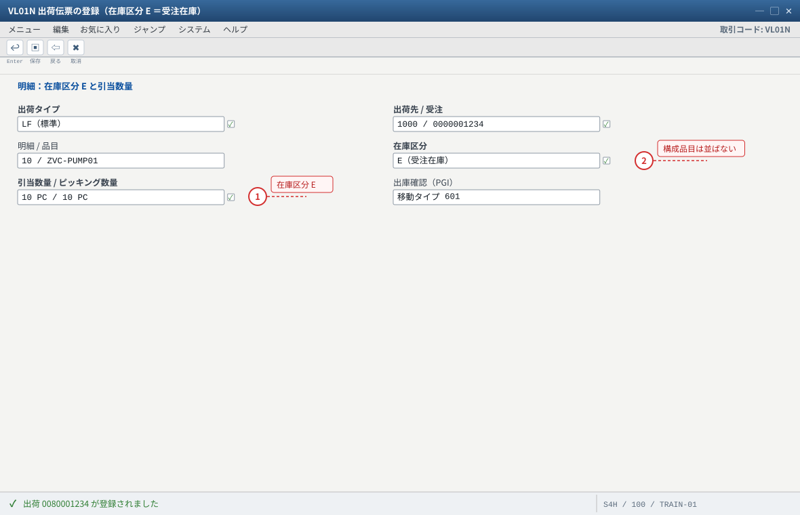
- 1 在庫区分が E でない（自由在庫）と引当できない。受注在庫 0 なら 101 の入庫漏れ
- 2 出荷明細に構成品目は並ばない（親品目を出荷し、部品は製造で消費する設計）
自システムでの確認：VL01N 明細の在庫区分、PGI 後の MMBE（受注在庫が 0）、MB03 の品目伝票で 601 と会計伝票。
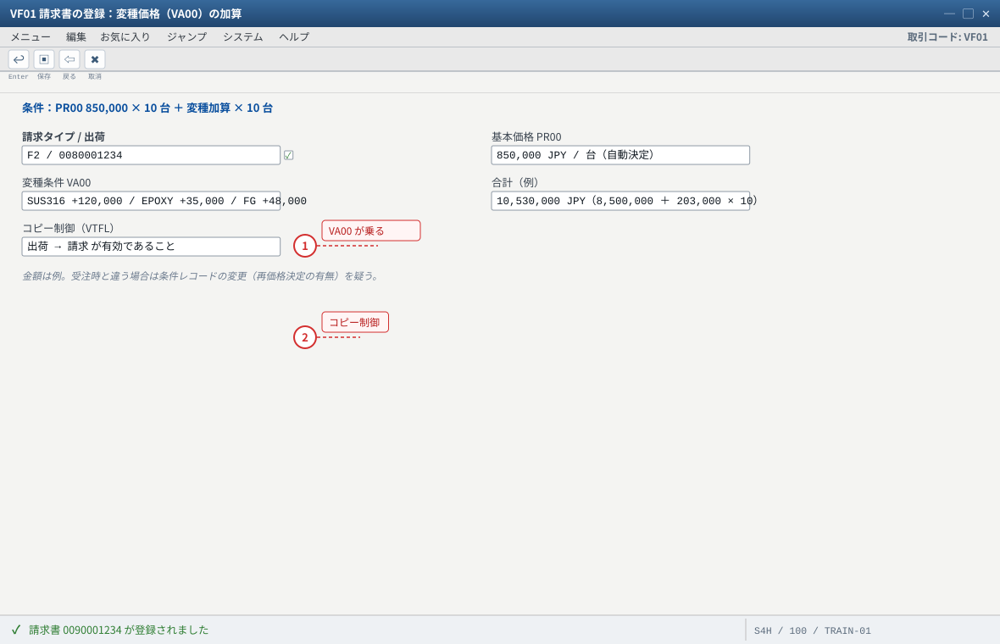
- 1 VA00 の加算が出荷から請求へコピーされている（VC の変種価格が請求まで運ばれる証拠）
- 2 加算が無い場合は VTFL（コピー制御）か条件レコードの有効期間を確認
自システムでの確認：VF03 の条件タブ（VA00 の行）、VTFL のコピー制御（出荷 → 請求）、VA03 の伝票フロー。
自動転記（OBYC）と評価の確認
OBYC / FB03 / MM03- 目的
- 受注在庫（E）の入出庫と製造指図の差異が、どこに仕訳されるかを確認する。「在庫が動いているのに会計に来ない」は VC 固有の問題ではないが、VC 練習では必ず詰まる。
- IMG パス
- SPRO → 会計 → 財務会計 → 総勘定元帳 → 自動転記（
OBYC）：BSX（在庫勘定）・WRX（入庫/在庫）・GBB（消費・差異）。品目の評価クラス（MM03会計1）と合わせて確認。 - T-code
OBYC・MM03（会計1 評価クラス）・FB03（会計伝票照会）・MB03（品目伝票）・KO88（指図決済）- 入力値 / 確認対象
-
品目 ZVC-PUMP01 の評価クラス（会計1） 例 7920（自システムで確認） 受注在庫の入庫（101）→ BSX/WRX の在庫勘定 品目伝票 MB03 → 会計伝票 FB03 部品の出庫（261）→ GBB の消費勘定 指図差異の決済（KO88）→ 差異の行き先（所要量クラス 046 が決済プロファイルを統制という記載）
MM03→ZVC-PUMP01の会計1：評価クラスと価格管理を確認。OBYC→BSX/WRX/GBBのエントリが評価クラスぶん存在するか照会。- 入出庫を行った後、
MB03（品目伝票）→ 「会計伝票」ボタン →FB03で仕訳を確認。 - 製造指図を技術完了 →
KO88で決済（発展。本站では練習④ の最後に確認のみ）。
MB03 の会計伝票ボタンがグレーアウトしていないか（評価されていない品目では伝票が作られないことがある）。
② FB03 で在庫勘定と相手勘定の組合せ。③ 差異は KO88 後の FB03 系で確認。MM03 会計ビューが未整備）。
② 受注在庫（E）が評価されるかどうかは環境で異なる（S/4HANA Cloud の MTO は評価付が前提という記載）。標準原価や差異の扱いを業務と合意しておく。
③ OBYC を練習で書き換えない（会計影響が大きい）。見るだけにする。FB03 で 1 件抜き出し、「在庫が増えた／負債が増えた」の関係を説明せよ。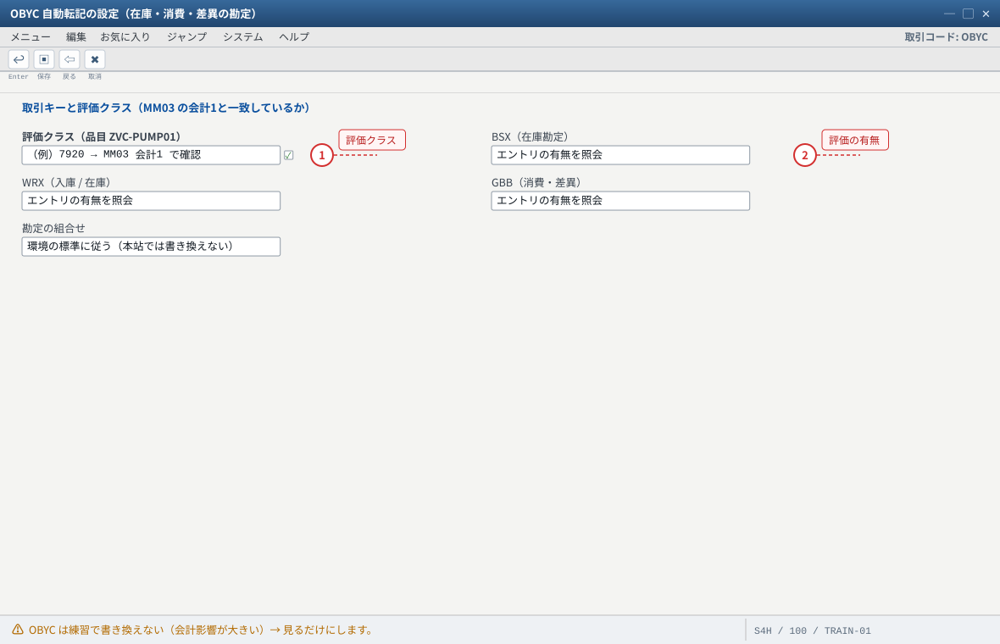
- 1 評価クラスが品目の会計1ビューと一致していないと入庫でエラーになる
- 2 受注在庫（E）が評価されるかは環境差が大きい（Cloud の MTO は評価付が前提という記載）
自システムでの確認：MM03 の会計1（評価クラス・価格管理）と OBYC の BSX / WRX / GBB のエントリが評価クラスぶん存在するか。
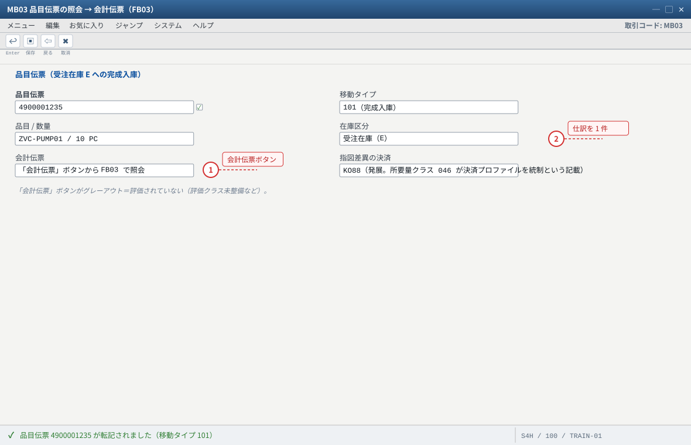
- 1 ボタンがグレーアウトしていないか＝評価の有無の判定
- 2 受注在庫（E）10 台の仕訳を 1 件提示できることが C15 の完了条件
自システムでの確認：MB03 の「会計伝票」ボタンがグレーアウトしていないか、FB03 で在庫勘定と相手勘定の組合せ。差異は KO88 後の FB03 系で確認。
Public Cloud 差异对照（AVC 前提・SSCUI でできないこと）
SSCUI・スコープアイテム IYT / 7DM- 目的
- Public Cloud で VC をやると何が変わるかを把握する。Cloud は AVC が前提で、SSCUI（セルフサービス設定 UI）では作れない領域がある。
- IMG パス（Cloud）
- 「設定」アプリ → SSCUI（セルフサービス設定 UI）。スコープアイテムの確認は「スコープと依存関係の管理」系アプリ。
- T-code / アプリ
PMEVC（AVC モデリング。Cloud は Fiori アプリ中心）・「製品設定」系アプリ・「スコープアイテムの確認」- 入力値 / 確認対象
-
必須スコープアイテム（例） IYT 受注生産（MTO）＋バリアント設定 7DM アドバンスド社内販売 ＋ MTO ＋ VC（2502 で導入。5D2 との組合せも可という記載） Cloud で変わる点 ・モデリングは AVC（PMEVC / 特徴グループ）。CU50 のクラシック画面は Fiori 系に置き換わる記載 ・明細カテゴリの新規作成など「標準にない伝票カテゴリの追加」は SSCUI では不可の領域がある ・価格キーは MMCOM-VKOND という記載（LO-VC の SDCOM-VKOND ではない） ・スコープアイテムを活性化しないと該当機能が現れない（後から足すには追加契約・再活性の考慮）
- 「スコープアイテムの確認」アプリで
IYT／7DMの活性状態を確認。活性でない場合は機能自体が出ない。 - 「製品設定」系アプリ（AVC）で、特徴グループと設定画面がどう見えるかを確認。
- 設定可能品目の品目マスタ（Cloud の「製品マスタ」アプリ）で、品目タイプ
KMAT／品目カテゴリグループ0002／戦略25／MRP4 個別所要量が設定できるか確認する。 - 「変更できない項目」に当たったら、それがSSCUI で不可なのか権限なのかを切り分けて記録する。
| 領域 | On-Premise | Public Cloud |
|---|---|---|
| モデリング環境 | LO-VC（CU41 系）と AVC（PMEVC）が併存 | AVC が前提。Fiori アプリ＋特徴グループ |
設定画面（CU50） | クラシック画面が使える | Fiori 系アプリ／特徴グループに置換（記載） |
| 明細カテゴリ等の追加 | VOV7/VOV4 で自由に追加できる | SSCUI で不可の領域がある（標準にない伝票カテゴリ等） |
| 価格のキー | SDCOM-VKOND（LO-VC の記載） | MMCOM-VKOND（AVC の記載） |
| 機能の有効化 | カスタマイジング＋権限 | スコープアイテム（IYT/7DM 等）の活性 |
| 在庫の評価 | 環境差が大きい（OVZG の評価区分で確認） | MTO は評価付販売伝票在庫が前提という記載 |
VOV7/VOV4 に相当する画面が無い／SSCUI の範囲外 → 要件そのものを変える必要がある）。
② スコープアイテムを活性化していないため「機能が存在しない」と誤診する。
③ CU41 の知識だけで Cloud に挑む → AVC の特徴グループ・Fiori アプリの学習が必要（varconf の AVC 連載が参考になる）。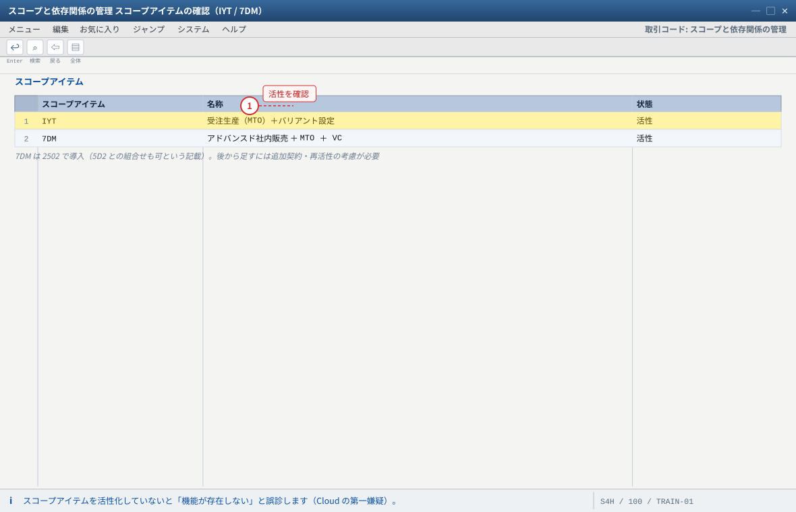
- 1 IYT / 7DM の活性状態が Cloud で VC をやる前提
自システムでの確認：「スコープアイテムの確認」系アプリで IYT / 7DM の活性状態を見る（活性でないと機能自体が出ない）。
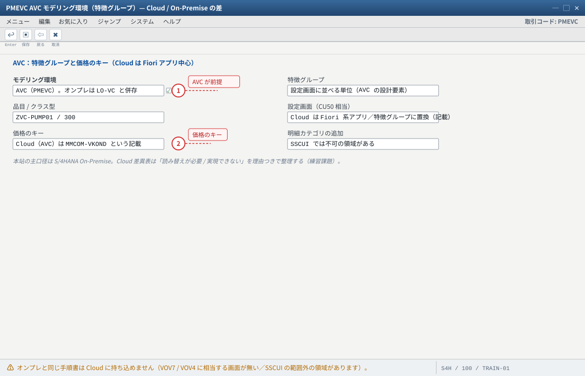
- 1 CU41 の知識だけで Cloud に挑むと詰まる（特徴グループ＋Fiori の学習が必要）
- 2 価格のキーが SDCOM-VKOND（LO-VC）から MMCOM-VKOND（AVC）に変わるという記載
自システムでの確認：PMEVC の起動可否、設定プロファイルの所在（CU43 と PMEVC）、Cloud はスコープアイテム（IYT / 7DM）と「製品設定」系アプリ。
配置完了チェックリスト（受講者用）
以下が全部「はい」と言える（＝証跡を見せられる）なら配置は完了です。学员版ワークシートに記入して提出してください。
- C0：
CT04/CL02/CU01/CU41/CU50の 5 つが起動でき、AVC（PMEVC）の可否を判断した - C1：特徴 4 つ（
ZVC_CAPACITY/ZVC_MATERIAL/ZVC_COATING/ZVC_ACCESSORY）が許可値つきで登録され、データタイプを説明できる - C2：クラス
ZVC_PUMP_CL（クラス型300）に 4 特徴が割当たり、必須状態を意図どおりにした - C3：
ZVC-PUMP01に「受注できる 5 条件」（KMAT／設定可能 ON／0002／戦略25／MRP4 個別所要量）が入り、分類ビューにクラスが割当たっている - C4：設定プロファイル
ZVC_PROFILE01が品目に割当たり、処理形式（受注 BOM）と必須チェックの状態を説明できる - C5：前提条件
ZVC_DEP_EPOXY_MATが特徴値に貼られ、CU50でFC200＋EPOXYが成立しないことを見せられる - C6：選択条件が BOM 明細（圧力計・流量計・ケーシング）と工程に貼られ、
CU50で取捨が変わることを見せられる - C7：手続き（または数量を制御する代替手段）により、容量
120で数量/標準値が変わることを説明できる - C8：スーパー BOM に材質別 3 行を含む構成品目が入り、
CU50の展開結果と一致する - C9：作業手順
ZVC_RT01に 3 工程があり、塗装NONEで 0030 が消える - C10：
VOV4でOR＋0002の決定行を実際に見つけ、VA03の明細カテゴリと納入日程行カテゴリ（所要量転送）を記録した - C11：
OPPS/OPPJ/OVZGで戦略25→KEK→046系の紐づけを自分の目で確認した - C12：在庫確認グループ（
02系）と受注時の納期決定の挙動（在庫ゼロでも受注が通る）を説明できる - C13：
VA00の条件レコードを作り、VA03の条件画面で設定値に応じた加算が出ることを見せられる - C14：出荷（在庫区分 E）→ 出庫確認 601 → 請求（
VA00込み）まで通し、伝票フローが閉じている - C15：受注在庫の入庫の仕訳を
MB03→FB03で 1 件提示できる - C16：Cloud との差異表を作り、「読み替えが必要 / 実現できない」項目を理由つきで挙げられる